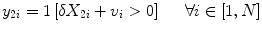

7.1 General Introduction
Mainland Southeast Asia (encompassing Cambodia, Laos, Myanmar, Thailand, Vietnam and Peninsular Malaysia, covering a land area of approximately 4 million km2), consists largely of mountains or hilly areas with elevations ranging from 300 to 5,500 m.a.s.l. These upland areas are considered crucial in regulating natural resources (soil, water and forests), headwaters and further watershed functions in this region. The main problems faced by these upland areas are related to land resource pressures caused by increased population density, land degradation, and economic growth (see Chap. 1), all of which have led to an increased demand for food and feed. To meet the food and feed demand, as well as improve the livelihoods of the upland population, steep sloping lands are increasingly being used for logging, shifting cultivation or swidden activities, as well as intensive cropping systems using monoculture. Inappropriate land uses have caused severe soil erosion, leading to a decline in soil fertility and, as a result, a downward pressure on productivity, which increased the pressure to use slopes for intensive cultivation (the linkages between poverty and environmental degradation are covered in Chap. 5). Given these challenges, there is a need to develop appropriate and acceptable technologies aimed at soil and water conservation, in order to create more sustainable highland agricultural systems. Although many of the currently developed soil conservation concepts have proven to be technically feasible, their adoption and use by farmers have remained limited.
This chapter briefly summarizes the causes and consequences of soil erosion (which are covered in detail in Chaps. 2 and 3), before presenting effective technologies to be used for soil erosion control and soil conservation. It then analyzes their drawbacks and investigates adoption constraints in Southeast Asian highland farming systems, based largely on case studies carried out in the upland areas of northern Thailand and northern Vietnam.
7.2 Effective Soil and Water Conservation Technologies for Sustainable Highland Agriculture in Southeast Asia
7.2.1 Drivers, Orders of Magnitude and Consequences of Soil Erosion in Asia
In Asia, farming systems have undergone significant changes in the recent past.1 Increased population pressure, improved infrastructure, migration and ‘market forces’ have contributed to this development, resulting in widespread and accelerated land degradation (Pingali and Shah 2001; Valentin et al. 2008), including tillage erosion, inter-rill and rill erosion, gully erosion and landslides (Turkelboom et al. 2008).
Soil erosion in Southeast Asia is strongly related to agricultural land use, in particular on the sloping lands of headwater catchments (Phan Ha et al. 2012). The impact of erosion and the amount of sediment yielded are both influenced by land use type, its location in the landscape, topography and the hydrology of the watershed (Gao et al. 2007; Vezina et al. 2006; Chaplot et al. 2005). Erosion affects more than 300,000 km2 or 65 % of the cultivated land area in Thailand (Kunaporn et al. 1999), and 130,000 km2 or 40 % of the total land surface in Vietnam (Vezina et al. 2006). Soil losses in northern Thailand reach up to 297 Mg ha−1 yr−1 under rainfall amounts ranging from 1,132 to 1,723 mm yr−1 (Vlassak et al. 1992; cf. Panomtaranichagul et al. 2004). In a study of north-east Thailand, Pansak et al. (2008) reported soil losses of up to 25 Mg ha−1 yr−1 in maize-based systems, even on only moderate slopes of 21–28 %, and in the absence of soil conservation measures. Similar amounts of soil erosion were found by Dung et al. (2008) in shifting cultivation systems with cassava and upland rice in northern Vietnam, but it is not uncommon for soil losses to reach values of up to 150 Mg ha−1 yr−1 in maize systems under local farmers’ practices, as was reported by Vu Dinh et al. (2010) for north-west Vietnam, where losses strongly depended on crop species, slope gradient and length, and field size.
Soil losses and run-off have a strong impact on crop yields, but the impact varies greatly between crops, continents and soil types. In Africa, Asia, Australia and Latin America, den Biggelaar et al. (2001) estimated a relative erosion-associated crop yield decrease per centimeter of soil loss two to six times higher than that for North America and Europe. The main reason for the greater impact on the former continents is their much lower average yields, so that with identical amounts of erosion, yields decline more rapidly in relative terms. This effect may even be amplified by one or several orders of magnitude due to inappropriate soil management, making the use of appropriate soil management techniques, those effective at erosion control and maintaining productivity, imperative, in order to meet the needs of the world’s present and future populations.
Soil loss, however, does not only mean the translocation of soil particles, it also severely affects the availability of plant nutrients and water storage capability, with consequences for both crop yields (Schmitter et al. 2012, 2011) and environmental quality (Anyusheva et al. 2012; Lamers et al. 2011). During erosion events, nutrients are leached (Lam et al. 2005; Dung et al. 2008; Pansak et al. 2008) and attached on eroded sediment, then relocated in the watershed or lost in river streams (Schmitter et al. 2012; Chaplot et al. 2005). Effective soil erosion control is; therefore, an essential part of sustainable upland agriculture systems and can be used to alleviate and solve the problems of agro-ecological and environmental degradation. For more detailed information on the scale of erosion and matter flows in mountainous regions studied by the Uplands Program, refer to Chaps. 2 and 3 of this book.
7.2.2 Soil Conservation Options
There are numerous soil conservation techniques (SCT) used to control soil loss and run-off from agricultural land at both the field and landscape levels. Conservation, minimum and zero tillage aim to reduce the impact of tillage on soil structures, while contour-based cropping systems such as strip cultivation, grass barriers, natural vegetative strips and alley cropping, reduce slope length or build a vegetative barrier against run-off. Cover crops, relay cropping, mulching and bio or synthetic geo-textiles placed on the soil’s surface decrease the direct impact of raindrops on the soil surface. On a larger scale, buffer strips in farming areas or close to riparian systems, and contour terracing, are also effective at addressing this issue.
Conservation agriculture (CA) aims to create minimum mechanical soil disturbance, and involves no-tillage seeding, the use of organic mulch cover and crop diversity. Its potential benefits include higher productivity and incomes, climate change adaptation and reduced susceptibility to erratic rainfall distribution, as well as reduced greenhouse gas emissions (Kassam et al. 2012). There are three important pillars of CA: (1) minimal tillage operations, (2) permanent soil cover, and (3) the rotation of primary crops (Chauhan et al. 2012). Recent studies have indicated that minimum tillage combined with cover crops has the potential to offer both improved soil conservation in cropping systems of tropical mountainous regions, as well as facilitate stable or even improve yields over the course of time, without the major disadvantages found with contour hedgerow systems (Hobbs 2007; Shafi et al. 2007). Pansak et al. (2008) found that minimum tillage and legume relay cropping practices showed a positive yield response and helped to control soil losses within maize cropping systems on moderate slopes in north-east Thailand, making such soil conservation measures a viable alternative for tropical mountainous regions. However, SCTs application domain (including slope, soil type, soil fertility and weed pressure) and effectiveness in reducing greenhouse gas emissions, as well as their economic viability, still needs to be determined before their widespread application can be recommended.
Contour-based cropping systems belong to those practices which are preferred and most likely to be adopted by farmers (Subedi et al. 2009). They are characterized by agricultural activities which follow an imaginary line drawn on the surface of the land along which all points have the same elevation. In contour-farming farm operations, including plowing, planting, cultivating and harvesting activities, are carried out along the contours, including contour tillage, contour strip cropping and contour terracing. All these operations aim to avoid the concentration of non-infiltrating rain, to guide surface run-off along gentle gradients and slow-down overland flow with the purpose of reducing soil erosion. In contour ditches, a channel is excavated along the contour line to accumulate and spread the water along its length. Further options include contour furrows, contour ridging and contour stone rows. Contour furrows are established along the contour line to reduce run-off and increase infiltration, whereas contour ridging is a ridge and furrow tillage system which follows the contour lines. Contour stone rows can slow down overland flow, increase infiltration and cause deposition of eroded material, while contour based systems also include vegetated strips, such as contour grass strips or contour hedges (ISSS 1996). In the Philippines, farmers have adapted contour legume-based hedgerow farming practices into a simpler buffer-strip system – as a labor-saving measure to conserve soil and sustain yields on steeply sloping cropland. These natural vegetative contour buffer strips have proven suitable for farmers practicing low-input, biological organic farming, or farmers practicing high-input conventional agriculture (Garrity 1999).
Soil cover plays a crucial role in erosion processes, as erosion increases with decreasing soil cover (Dung et al. 2008; Pansak et al. 2008; Chaplot et al. 2005; Podwojewski et al. 2008; Valentin et al. 2008). Mulching is a measure using plant residues to protect the soil against rain splash and to maintain a favorable soil microclimate by reducing evaporation (ISSS 1996). However, the introduction of mulching practices appears potentially easier at sites where biomass production is high enough to fulfill existing demands for feed and fuel, but may come to its limits in regions with relatively high feed and fuel pressures (Valbuena et al. 2012). Thus, farmers often see mulching as less appropriate, as it depends on the availability of harvest residues or other plant materials, complicates weeding, and may attract rats and snakes. As a result, it is often not adopted (Subedi et al. 2009). Synthetic or biological geo-textiles also aim to reduce the direct rainfall impact on the soil by increasing soil cover. Subedi et al. (2009) looked at adoption rates by farmers within the Sustainable Highland Agriculture in Southeast Asia (SHASEA) project, and found that polythene mulch was recognized as effective, but likely to be adopted only if financial returns were highly favorable. In another study, biological geo-textiles were found to significantly increase above-ground biomass production due to soil and moisture conservation, and decrease soil loss under diverse soil and climatic conditions (Bhattacharyya et al. 2012). In a study in Thailand, plots under contour planting mulched with bamboo mats showed 40 % and 26 % higher sweet corn and lablab bean yields respectively than plots under contour planting only. In Vietnam, Borassus spp., maize stalk and bamboo mat covers between rows led to 53 %, 47 % and 35 % higher soybean yields respectively, and significant decreases in soil loss (67–98 %) when compared to plots without cover.
According to Hobbs (2007), the next decade will have to sustainably produce more food from less land through a more efficient use of natural resources and with minimal impact on the environment, in order to meet the demands of a growing population. Promoting and adopting SCT will help the world to reach this goal. Farmers’ participation in such kinds of technology testing can play a key role in the adoption of more sustainable land use practices. A study by Howeler et al. (2006) found that rapid rural appraisals, farmer evaluation of a wide range of practices shown in demonstration plots, farmer participatory field trials with farmer-selected treatments on their own fields, field days with discussions held to select the best among the tested practices, the scaling-up of selected practices to larger fields and farmer dissemination to neighbors and neighboring communities, all led to a greater rate of adoption of new cropping practices in Thailand, Vietnam and China, including the planting of contour hedgerows in order to control erosion. Critical constraints to adoption appeared to be competing uses for crop residues, increased labor demand for weeding and a lack of access to essential external inputs and their use (Giller et al. 2009). At farm and village levels, trade-offs in the allocation of resources become important in determining how SCT may fit into a given farming system, and at a regional level, market conditions, interactions among stakeholders and other institutional and political factors are also important (Giller et al. 2011).
7.2.3 Integrated Soil and Water Conservation: A Case Study from Northern Thailand
An Integrated Water-harvesting, Anti-erosion and Multiple cropping (IWAM) approach was tested in northern Thailand to identify alternative strategies for an improved and sustainable rain-fed crop production system used on steep slopes, and based on experiences with bio-geotextiles in various countries. In contrast to synthetic geo-textiles such as polyethylene sheets, bio-geotextiles are bio-degradable and can be placed on the soil surface in order to reduce rainfall impact, decrease evaporation and obtain a better soil cover. In developed countries they are often used to stabilize roadside slopes, but also have numerous agricultural uses (Fullen et al. 2007). As well as contributing to soil conservation, the potential benefits of such practices for developing countries include the development of a rural labor-intensive industry in which particularly socially disadvantaged groups can be employed for the production of bio-geotextiles that could be exported to industrialized countries based on fair trade principles (Booth et al. 2007). The IWAM approach consists of three pillars: (1) contour furrow cultivation, (2) mulching, and (3) multiple cropping. The first pillar – contour furrow cultivation, breaks the water flow down slopes, to decrease surface run-off and soil loss as well as increase water infiltration and; hence, the amount of soil water available for plant growth. The second mulching decreases the impact of rain drop energy on the soil surface during the wet season and reduces soil water evaporation during the dry season, while the third, multiple cropping, achieves both – a permanent soil cover and a continuous income flow for farmers (Panomtaranichagul et al. 2010).
7.2.3.1 Study Sites and Experimental Set-Up
Field experiments for this study were carried out between 2007 and 2009. Two sites were established, one at Bor Krai in Pang Mapa district, Mae Hong Son Province (site 1: 19°33′6″N, 98°12′52″E; altitude 697–719 m.a.s.l.; slope gradients 38–48°), and the other at Jabo Village in Pang Mapa District, also in Mae Hong Son Province (site 2: 19°33′51″N, 98°12′10″E; altitude 896–910 m.a.s.l.; slope gradients 16–18°), using complete randomized block designs with three replications. Both sites had a clayey soil texture. Climate in the area is influenced by tropical monsoons with a hot dry season lasting from mid-March to mid-May. Intermittent rain showers occur towards the end of April and until the arrival of the monsoonal rains at the end of May. The wet season lasts until the end of October or early November, followed by a cool and dry season. Total rainfall amounts at the study site were 1,642 mm in 2007, 1,717 mm in 2008 and 1,579 mm in 2009.
The treatments applied were: (1) conventional contour planting (CP), (2) cultivated contour furrow planting with alley cropping (CF-AL), (3) cultivated contour furrow planting with alley cropping mulched with bio-geotextiles (CF-BGT-AL), and (4) contour planting with alley cropping and bio-geotextiles (CP-BGT-AL). The following bio-geotextiles were available at the field site: bamboo mats, banana leaves (Musa acuminata), imperata grass (Imperata cylindrica), bamboo grass (Thysannolaena maxima), vetiver grass (Vetiveria nemoralis) and forking fern (Dicranopteris linearis). For this study, banana leaves, bamboo grass and vetiver grass were used. As differences between the bio-geotextiles were marginal, these treatments were averaged and presented as one treatment. In the alley cropping treatments, a mixture of fruit trees was set up, these being mango (Mangifera indica), lemon (Citrus aurantifolia) and jujube (Ziziphus jujuba). In addition, Graham stylo (Stylosanthes guianensis) was sown as a cover crop below the fruit trees. Sweetcorn (Zea mays var. saccharata) was planted as the first crop, followed by groundnuts (Arachis hypogea) or upland rice (Oryza sativa), and chilies (Capsium frutescens) or kidney beans (Phaseolus vulgaris) as a second crop. As a third crop lablab beans (Lablab purpureus) were sown. All the crops were relay cropped, making it possible to establish three crops a year.
Construction of cultivated furrows has to be carried out with great care. Furrows were constructed using a hand hoe and digging the soil up to 30–40 cm in depth. Starting from the lowest part of the plot with the first furrow, subsoil was taken to construct the ridge, with topsoil moved from the second upper furrow into the first furrow. The same procedure was repeated in the next ridge, and so on. The widths of the ridges and furrows were 25 and 50 cm respectively. Soil losses and run-off values were recorded between June 2007 and January 2010 using Wischmeier plots, with plot sizes of 5 m by 30 m at site 1 and 6 m by 40 m at site 2.
7.2.3.2 Soil Loss and Run-Off
Run-off was well controlled by applying the above-mentioned SCT and decreased by 60 % at both sites (Fig. 7.1), with no significant differences in run-off found between the tested and the improved SCT. Soil losses were even more reduced by the improved SCT than the run-off, and for the contour planting with bio-geotextiles and alley cropping were only 8–32 % of those under the traditional contour planting system. Both treatments had a greater impact in terms of controlling soil erosion using furrow cultivation (alley cropping with or without bio-geotextiles), than when using contour planting with alley cropping and bio-geotextiles, leading to negligible soil losses. As the experimental plots had been established for almost 4–5 years, most cultivated soils, furrows and ridges were stable; therefore, soil losses were rather low when compared to newly constructed plots.
Fig. 7.1
Run-off (a) and soil losses (b) for contour furrow planting with alley cropping (CF-AL), contour furrow planting with bio-geotextiles and alley cropping (CF-BGT-AL), and contour planting with bio-geotextiles and alley cropping (CP-BGT-AL) in terms of the percentage of contour planting (CP). Data were collected between June 2nd 2007 and January 10th 2010 at Bor Krai (site 1) and Jabo village (site 2), both in Pang Mapa district, Mae Hong Son Province, Thailand. Error bars indicate standard deviations of the three replicates
Furrow cultivation associated with bio-geotextile application increased soil water storages (see Fig. 7.2), while in both furrow cultivation treatments, stored soil water was higher than in the contour planting treatments over the entire observation period. Interestingly, this effect was also observed during the drier periods, thereby extending the potential crop growing period. Bio-geotextiles had an additional positive effect on stored soil water also.
Fig. 7.2
Soil water storage as impacted by contour planting (CP), contour furrow planting with alley cropping (CF-AL), contour furrow planting with bio-geotextiles and alley cropping (CF-BGT-AL), and contour planting with bio-geotextiles and alley cropping (CP-BGT-AL), plus cumulative rainfall at Bor Krai (site 1), Pang Mapa in Mae Hong Son Province, Thailand. Data were collected between June 2nd 2007 and January 10th 2010
At both test sites higher maize cob yields were obtained under improved SCT regimes (Fig. 7.3) – at site 2, an additional positive trend was observed when furrow cultivation was combined with bio-geotextile application. However, differences among SCT regimes were small and not significant (to a 5 % level of error probability), and variability was high. More strongly positive yield effects were observed when looking at the yields of the second crops planted using the IWAM approach (Fig. 7.4). Both furrow cultivation and bio-geotextile application improved the yield performance of tested crops, while a combination of both led to an even better result. Among all the tested second crops, groundnuts and upland rice showed higher yield responses than the other tested crops, profiting most from the additionally stored water under the IWAM treatments.
Fig. 7.3
Fresh sweet corn cob yields as affected by contour planting (CP), contour furrow planting with alley cropping (CF-AL), contour furrow planting with bio-geotextiles and alley cropping (CF-BGT-AL), and contour planting with bio-geotextiles and alley cropping (CP-BGT-AL) at Bor Krai (site 1) and Jabo village (site 2), Pang Mapa district, Mae Hong Son Province in Thailand. Error bars indicate standard deviations. Data are yearly averages for the years 2007–2009
Fig. 7.4
Yields of second crops as affected by contour planting (CP), contour furrow planting with alley cropping (CF-AL), contour furrow planting with bio-geotextiles and alley cropping (CF-BGT-AL), and contour planting with bio-geotextiles and alley cropping (CP-BGT-AL) at Jabo village, Pang Mapa district, Mae Hong Son Province in Thailand for the years 2007–2009. Error bars indicate standard deviations
Under the IWAM approach, lablab beans were established as a third crop to ensure a year-round soil cover. The average yearly cumulative yields for lablab beans during the 3 years of the study (2007–2009) were 315 kg ha−1 under contour planting, 671 kg ha−1 under contour furrow planting with alley cropping, 737 kg ha−1 under contour furrow planting with bio-geotextiles and alley cropping, and 691 kg ha−1 under contour planting with bio-geotextiles and alley cropping.
A comparison of the economic returns of the worst and the best study treatments in terms of economic performance is given in Table 7.1. The best practice, a combination of furrow cultivation, alley cropping and bio-geotextile application (CF-BGT-AL) gave a net profit of 46,152 baht ha−1 yr−1 (1,442 USD ha−1 yr−1) assuming zero costs for bio-geotextiles and labor. In contrast, conventional contour planting (CP) resulted in only 4,748 baht ha−1 yr−1 (134 USD ha−1 yr−1).
Table 7.1
Expected income from annual crops and hedgerow fruit yields as affected by contour furrow planting with bio-geotextiles and alley cropping (CF-BGT-AL) and by contour planting (CP). Evaluations based on data collected at site 2, Jabo village, Pang Mapa district, Mae Hong Son Province in Thailand. Crop yields are yearly averages over the three study years (2007–2009), whereas fruit yields given are from the first year with a fruit set (2009)
Annual crops and fruit trees | Yield (kg ha−1) | Market price (baht kg−1) | Expected income (baht ha−1) | Expected income (USD ha−1) |
|---|---|---|---|---|
Best cultural practice (CF-BGT-AL):
| ||||
Sweet corn | 6,498 | 5 | 32,490 | 1,015 |
Upland rice | 1,288 | 8 | 10,304 | 322 |
Lablab bean | 246 | 20 | 4,920 | 154 |
Mango | 1,875 | 15 | 28,125 | 879 |
Lemon | 5,313b
| 11b
| 5,313 | 166 |
Average income per year | 81,152 | 2,536 | ||
Capital for the third year (alley crop cultivars and fertilizers, incl. fruit tree establishment)b
| 35,000 | 1,094 | ||
Net income | 46,152 | 1,442 | ||
Worst cultural practice (CP):
| ||||
Sweet corn | 3,036 | 5 | 15,180 | 474 |
Upland rice | 391 | 8 | 3,128 | 98 |
Lablab beans | 315 | 20 | 6,300 | 197 |
Average income per year | 24,608 | 769 | ||
Capital investment for the third year (crop cultivars, fertilizers) | 20,313 | 635 | ||
Net income | 4,748 | 134 | ||
7.2.3.3 Conclusions
Based on the results of this case study, an ideal crop combination for the IWAM approach seems to be a relay cropping system of sweet corn, upland rice and drought-resistant lablab beans. However, the most suitable combination should be determined by the needs of the farmer and the availability of markets. In addition, hedgerows of mixed fruit tree varieties are an interesting option. Using legumes as ground cover in hedgerows, such as Graham stylo (Stylosanthes guianensis), may bring additional benefits for both soil/water conservation and farm income. However, the most important element of the IWAM system is that cultivated furrow construction must be carefully conducted, keeping the surface or topsoil in the furrows and using the subsoil of each furrow to make the ridges. Leguminous cover crops cultivated on each ridge have a stabilizing effect, thus avoiding a collapse during the wet season. This cover crop may also be cut/pruned and used as mulch in the furrow to add organic matter and nitrogen for use by the alley crops, having additional positive impacts on the system. Furthermore, drip irrigation, as an additional practice, can be useful during the 4 months of the dry season (January to April) in order to reduce water stress and increase the yield/quality of multiple fruit production activities using the alley cropping systems. Farmers, however, can achieve these benefits if, and only if, fruit crops are included and sound support is given in terms of extension services while establishing this approach.
7.3 Timeframe for Soil Conservation Technologies to Become Effective and to Improve or Sustain Crop Yields
In this section, soil conservation is interpreted in its broader sense to include both the control of soil erosion and the maintenance of soil fertility.2 This follows the assumption that erosion lowers soil fertility through a removal of organic matter and nutrients in eroded sediments, and the recognition that soil degradation by either biological, chemical or physical processes other than erosion are grouped as a decline in soil fertility (Young 1996). In this context, soil fertility is understood as the capacity of the soil to support plant growth, and may encompass parameters such as plant available nutrients, soil organic matter (SOM), or soil structure (Lal 1998). Based on the soil conservation techniques reported in Sect. 7.2, soil cover plays a crucial role in this concept, usually in the form of a barrier such as grass strips, which are used to directly influence the strength and impact of run-off and soil removal, or surface covers such as mulching and minimum/zero tillage systems which are used to reduce the impact of raindrops and run-off. Important in this aspect is the timeframe given for SCT to become, not only effective, but also significantly improve or sustain crop yields. Such a feedback from the biophysical environment can become a key driver in the successful adoption of SCT. In addition, soil degradation can negatively influence the establishment of SCT, as low initial stocks of plant available nutrients may hamper the development of a protective soil coverage during erosive rainfall events (Bonell and Bruijnzeel 2005; Lippe et al. 2011; Pansak et al. 2008).
To improve our understanding of the importance of initial soil fertility conditions, interactions and feedback mechanisms, and the timeframe of selected SCT, this section draws on the results of three case studies carried out in the mountainous north-east of Thailand and north-west of Vietnam. The results of the study in north-east Thailand were published by Pansak et al. (2007, 2008), whereas the results of the case study in north-west Vietnam are preliminary and based upon ongoing field experiments (Vu Dinh et al. 2012a, b; ENBW 2011). The final modeling study looks at the longer term developments of the use of SCT in the sloping environments of Southeast Asia (Lippe et al. 2011).
7.3.1 Description of Study Sites and the Experimental Design
The case study area in north-east Thailand was Ban Bo Muang Noi in Loei Province, whereas the field trials and the modeling study in Vietnam were conducted in Chieng Khoi commune, Son La province in north-west Vietnam. A summary of the environmental features of both sites is given in Table 7.2. A relatively fertile humic Lixisol was found in Ban Bo Muang Noi, whereas soil fertility levels in Chieng Khoi were comparatively low for SOM, total nitrogen and available phosphorous, probably a result of the continuous cropping history and the steep slopes, making the site prone to soil erosion. Annual rainfall regimes are similar at both sites, with figures ranging from 1,000 to 1,300 mm−1 a year during the study period.
Table 7.2
Environmental features of the study sites – Ban Bo Muang Noi in north-east Thailand and Chieng Khoi in north-west Vietnam
Site conditions | Ban Bo Muang Noi | Chieng Khoi |
|---|---|---|
Monitoring years | 2003; 2004; 2005 | 2009; 2010 |
Elevation (m.a.s.l.) | 572 | 516 |
Slope (%) | 21–28 | 35–53 |
Climate type | Tropical Savannah | Tropical Monsoonal |
Rainfall (mm a−1) | 1,352; 1,288; 1,051 | 1,035; 1,329 |
Soil typea
| Humic Lixisol | Haplic Luvisol |
SOM (%) | 3.5 | 0.76–1.26 |
Tot N. (%) | 0.14 | 0.08–1.3 |
Avail. P (mg kg−1) | 14b
| 2.46–2.7c
|
Land use history | 2001–2003 grass fallow; before 2001 swiddening | Since 1999 maize-based cropping, upland rice (1997/1998); before 1997 secondary forest |
Maize-based field trials: | ||
T 1 (control) | Minimum tillaged
| Farmers’ practicee
|
T 2 | Min. tillage + grass strip (Vetiveria zizanioides) | Farmers’ practice + contour strips (Panicum maximum) |
T 3 | Min. tillage + grass barrier (Brachiaria ruziziensis) | Min. tillage + cover crop (Arachis pintoi) |
T 4 | Min. tillage + hedgerow (Leucaena leucocephala) | Min. tillage + relay cropping (Phaesolus calcaratus) |
The field trials were established using bounded run-off plots (for further explanations, see also Sect. 7.4) with a width of 4 m and a length of 18 m downslope, and with side walls of 0.20 m in height to prevent run-on water. Maize (Zea mays) was used in all treatments as a representative local cropping system. In the case of Ban Muang Bo Noi, trials were established in April 2003 and fields laid out using a split-plot design and with fertilizer application as the main variable factor (no fertilizer, and 60 kg N ha−1 plus 14 kg P ha−1), soil conservation as the subfactor, and with two replicates. In total, 16 monitoring plots were established, and a collection device for run-off water and eroded soil was installed at the lower end of each plot. Subfactor treatments were: (1) vetiver grass (Vetiveria zizanioides) barriers, (2) ruzi grass (Brachiaria ruziziensis) barriers, (3) leucaena (Leucaena leucocephala) hedges, and (4) a control without a hedgerow (all under minimum tillage). Leucaena, ruzi grass and vetiver grass were planted in three 1 m wide barriers at intervals of 6 m, occupying about 17 % of the total plot area. Maize was relay cropped with Jack beans (Canavalia ensiformis) starting in September 2003. Jack beans were planted 1 month prior to maize harvest. Maize stover and all Jack bean materials were left on the plots as mulch to protect the soil from erosion and suppress weed growth the following growing season. Plots with hedgerows or grass barriers were pruned three to six times per year, with pruning spread evenly over the alley. In all treatments, weeding was done by hand when necessary, which defined the trial set-up as a minimum tillage system (Young 1996).
In the case of Chieng Khoi, field trials were chosen based on a participatory selection process in cooperation with local farmers and extension officers, resulting in four treatments, namely: (1) maize cropping following farmers’ normal practice (hoeing, weeding, burning, animal plowing and hoeing), (2) maize with Panicum maximum as a grass barrier, (3) maize under minimum tillage with Arachis pintoi as a cover crop, and (4) maize under minimum tillage, relay cropped with a leguminous bean Phaseolus calcaratus. Trial plots were installed as a randomized complete block design with three replicates, receiving a total fertilizer rate of 158, 17.5 and 58.6 kg ha−1 of N, P, and K respectively. Panicum maximum grass barriers were planted in June 2009 and Arachis pintoi was transplanted in June 2009. Phaseolus calcaratus was sown in all years 1 month after maize planting. In both years, maize was sown in mid-May and harvested at the end of September. In the case of Ban Bo Muang Noi, maize was harvested at the beginning of October in 2003, 2004 and 2005. As a common approach in both field trials, harvested maize plants were separated into grain and stover and oven-dried at 70 °C to determine the dry weight.
Soil loss and run-off data were collected after every rainfall event using a series of collecting tanks or buckets, which directly measured run-off volumes. Soil loss amounts were calculated based on the collected heavier sediment found at the bottom of the plot in the collection device, and the suspended sediment fractions. Suspended sediment fractions were collected through run-off samples of approximately 1 L, as taken from the tanks or buckets after stirring and filtering. After filtration, particles collected on the filter were oven-dried at 105 °C for 24 h to determine the amount of sediment found in suspension.
The following paragraphs present a summary of the monitoring results, focusing on annual run-off (mm a−1), soil loss rates (Mg ha−1) and maize grain yields (Mg ha−1) per monitoring year. Further results, such as event-based soil losses and run-off rates, or nitrogen leaching in the case of Ban Bo Muang Noi in Thailand, can be found in Pansak et al. (2007, 2008), and in the case of Chieng Khoi in Vietnam, in ENBW (2011) and Vu Dinh et al. (2012b).
7.3.2 Run-Off and Soil Loss as Affected by Soil Conservation and Time
A common feature of all the treatments at Ban Bo Muang Noi was the reduction in annual run-off and soil loss rates through the use of soil conservation treatments (Table 7.3, Fig. 7.5a). Plots with hedgerow systems showed a progressive reduction in run-off and soil loss over time, while the control without hedgerow was characterized by a lower decrease in run-off and soil loss from the first to the second year. However, total soil loss (1.6–2.5 Mg ha−1) from the control plots without hedgerows strongly reduced in the third year, confirmed by the significant interaction between SCT and the relevant year (e.g., there was reduced rainfall in year 3). In the third year, the lowest run-off was observed in the fertilized leucaena hedge treatment, while the ruzi grass barrier treatment revealed the lowest soil loss. In the third year, fertilizer application also significantly reduced run-off and soil loss in most treatments, when compared to the unfertilized ones (data not presented), probably due to the increased and better established plant soil cover.
Table 7.3
Run-off (mm a−1) during the period 2003–2005 in Ban Bo Muang Noi, Thailand, and during 2009–2010 in Chieng Khoi, Vietnam, as affected by soil conservation technology
Year | Run-off (mm a−1) | Rainfall (mm a−1) | |||
|---|---|---|---|---|---|
Min. tillage | Vetiver grass strips | Ruzi grass barriers | Leucaena hedges | ||
Ban Bo Muang Noi
a
| |||||
Min. tillage | Vetiver grass strips | Ruzi grass barriers | Leucaena hedges | ||
2003 | 80 (2.2) | 66 (2.9) | 72 (0.5) | 70 (1.7) | 1,352 |
2004 | 65 (3.8) | 34 (0.8) | 53 (1.5) | 34 (6.0) | 1,288 |
2005 | 43 (5.5) | 19 (1.0) | 22 (2.6) | 19 (7.4) | 1,051 |
Chieng Khoi
| |||||
Farmers’ practice | Panicum grass barriers | Arachis cover crops | Relay cropping | ||
2009 | 64 (46.5) | 28 (6.9) | 48 (28.3) | 51 (13.9) | 1,035 |
2010 | 162 (78.3) | 69 (30.7) | 14 (5.7) | 130 (79.8) | 1,329 |
Fig. 7.5
Annual soil loss rates (Mg ha−1) as affected by soil conservation technology during the monitoring periods: (a) 2003–2005 in Ban Bo Muang Noi, Thailand, and (b) 2009–2010 in Chieng Khoi, Vietnam (Note: MT refers to a minimum tillage system)
At Ban Bo Muang Noi after 3 years, run-off from the fertilized control plot was still significantly (p > 0.05) higher as compared to that from the hedgerow treatments without fertilizer application. With regards to soil loss, a similar observation was made for the control plot without fertilizer (data not presented), but not when fertilizer was applied. The control (in this case, minimum tillage with fertilizer) showed a much higher soil loss (24.5 Mg ha−1) in the first year, but also showed much reduced erosion in the third year (2.5 Mg ha−1), partly due to reduced rainfall but also due to the combined effects of minimum tillage and surface mulch. The effect of minimum tillage plus mulching delayed the effects of rainfall in inducing run-off (only after rainfall events >5 mm day−1), but needed time to become effective. The contour hedgerow systems were effective in controlling soil loss, but less than established minimum tillage (data not presented). Thus, the combined implementation of minimum tillage and mulching, and contour hedgerow systems brought soil loss figures below 1 Mg ha−1 by the end of the monitoring period. Peaks of run-off and soil loss mainly coincided with strong rainfall events. However, the pattern of run-off and erosion response, as a function of time, differed over consecutive years. In 2003, at the beginning of the trial, all treatments followed a similar trend of cumulative run-off (data not presented). However, in August 2003, 3 months after planting, an extremely high rainfall event occurred, causing high run-off on all plots, but the impact was lower on plots with contour hedgerows.
Monitored run-off and soil loss rates in Chieng Khoi (Fig. 7.5b) were on average two times higher than in Ban Bu Muang Noi; overall following a similar decreasing trend over time, as described at Ban Bo Muang Noi (Fig. 7.5a), even with the higher observed rainfall amounts in 2010 (Table 7.3). The decline in soil loss between the first and second year in the Arachis treatment in Chieng Khoi was more drastic than in Ban Muang Noi. Although measured annual soil loss rates showed a high variability, as depicted by large standard errors of the means, and statistical analysis revealed the influence of SCT in reducing soil loss in the first year of the field trial. Field observations indicated that the described pattern was most probably related to a slow development of soil coverage at an early stage of the field trial. Nevertheless, the impact of SCT was most effective for the cover crop (Arachis pintoi) treatment in combination with minimum tillage, reducing annual soil loss rates on average by 15.5 Mg ha−1 when compared to farmers’ own practices in 2009, and to a negligible amount in 2010.
7.3.3 Performance of Maize Yields, as Affected by Soil Conservation Treatments
SCT and fertilizer application significantly (p < 0.01) affected maize grain yields in Ban Bo Muang Noi, Thailand (Fig. 7.6a). However, the effect of both changed over time, leading to a significant (p < 0.05) interaction. The highest maize grain yields (5.5 Mg ha−1) were reported 3 years after establishment of the control plot without hedgerows and with fertilizer applied, and in the same year, the lowest maize grain yields (2.0 Mg ha−1) were obtained on plots using ruzi grass barriers but without fertilizer application. The use of contour hedge rows significantly reduced maize grain yields (p < 0.01), by up to 39 % in the second year and 47 % in the third year, as compared to the control plot without hedges. This decline in maize grain yields was much higher than the reduction by almost 17 % in the cropping area, as compared to the control plot without hedgerows. The control plots, regardless of fertilizer application levels, showed a strong yield increase from the first to the second year, but then the increase was lower in the third year after fertilizer was applied (Fig. 7.6b). The cumulative grain yield over 3 years amounted to 10.7 Mg ha−1 in the control plot without hedgerows/barriers (average fertilizer treatments), 1.3 times higher than under the soil conservation treatments.
Fig. 7.6
Maize grain yields (Mg ha−1) for the period 2003–2005 at Ban Bo Muang Noi, Thailand, as affected by fertilizer application (a: unfertilized, b: fertilized) and soil conservation technology; (c) Maize grain yields (Mg ha−1) as affected by SCT in 2009 and 2010 in Chieng Khoi, Vietnam (Note: MT refers to minimum tillage)
The performance of maize grain yields in Chieng Khoi, Vietnam showed a different behavior to those in Ban Bo Muang Noi in Thailand (Fig. 7.6c). In the first year, the yield response in Chieng Khoi was almost twice as high as in Ban Bo Muang Noi, being in the range 5.5–6.5 Mg ha−1. This difference was probably associated with the different maize hybrid varieties and fertilizers used in each case study. The treatment using Arachis pintoi as a cover crop, in combination with minimum tillage, outperformed farmers’ practices by 1.5 Mg ha−1 in 2009, as compared to the trials using Panicum maximum as a grass barrier and relay cropping using Phaseolus calcaratus. The positive grain yield trend previously observed in Ban Bo Muang Noi under SCT could not be confirmed for the experimental trials held in Chieng Khoi for 2010, due to a drought occuring immediately after the onset of the wet season at end of June. These unfavorable growth conditions resulted in delayed shoot development among the maize plants, as well as delayed development of Panicum maximum and Arachis pintoi. As a result, maize cobs were only party filled or remained empty during the generative stage, leading to grain yield reduction in the case of farmers’ practices by 42 %, in Arachis pintoi by 65 % and in Panicum maximum by 56 %. Remarkable in this context was the behavior of the relay cropping treatment, which not only outperformed farmers’ practices in 2010 by 0.89 Mg ha−1 (+25 %), but was able to reach a maize grain yield similar to 2009, showing only a moderate yield reduction of 17 % in 2010 despite the drought stress experienced.
7.3.4 Discussion and Conclusion
A major observation to be made of these case studies is that the impact of SCT changed over time, allowing the implementation of adaptation measures which enhanced the attractiveness of such technologies. In the case of Ban Bo Muang Noi in Thailand, contour hedgerows were important at reducing run-off and soil loss, in particular when the fields were first established. When contour hedgerows were combined with the use of additional SCT, such as minimum tillage and mulching, hedgerows had a less important role to play in the reduction of soil losses in the later phases. In contrast, minimum tillage treatments combined with cover crops proved to be a potential alternative in terms of soil conservation measures in cropping systems, as well as for stabilizing or even improving yields without the major disadvantage of using hedgerow systems. The use of SCT positively influenced maize grain yields, and also showed that even under unfavorable growth conditions, as in the case of the intermediate drought period during the wet season of 2010 in Chieng Khoi, relay cropping was a viable option in terms of sustaining crop yields – outperforming all other treatments. Herein lays an opportunity for the successful and sustainable establishment of SCT as an integrated rather than individual adoption concept. Combining temporal barriers; for example, a natural vegetation strip, together with minimum tillage and relay cropping (legume) could be a viable alternative to the well-known and commonly used contour hedgerow systems. In combination with hedgerows, these systems may be used during the initial vegetation phase of a cropping system, to be removed thereafter once the system is well established. This would also avoid further competition between barrier hedges and crops (Pansak et al. 2007), which is probably one of the reasons for low adoption rates among farmers. When using conservation agriculture (without hedgerows), run-off still exists but is “cleaner” (at least during small to moderate rainfall events) due to a reduced soil detachment and hence lower transportation of sediment loads down slope. Therefore, in situations where reducing run-off is not the major goal, a combination of minimum tillage and mulching, together with relay cropping, may provide a sustainable agricultural practice in sloping environments. Findings from the relay cropping field trial in Chieng Khoi also show that even with initial low soil fertility levels and a resulting slower build-up of a protective cover and mulch layer, crop growth performance was sustained, even under the unfavorable cropping conditions that occurred in 2010. However, the results also demonstrate the importance of the careful selection of an appropriate cover crop partner and system to avoid detrimental effects. Further aspects such as observed improvements of the soil’s physical structure, as associated with an increase in soil infiltration rates (G. Clemens; personal communication), have not been further elaborated upon in this chapter, however, they are further signs of the positive aspects of SCT.
7.4 Modeling the Impact of Initial Conditions, and the Long-Term Development of Soil Conservation Technologies
Land use models have become important tools in analyzing the impact of agricultural systems on ecosystem services such as the renewal and maintenance of soil fertility (DeFries et al. 2004).3 In the context of this section, two major types of dynamic land use modeling approaches can be distinguished: plot-based approaches with an often-detailed representation of biophysical and geo-chemical processes such as the Water, Nutrient and Light Capture in Agroforestry Systems Model (WaNuLCAS) (van Noordwijk and Lusiana 1999), and landscape approaches such as the Forest, Agroforest, Low-value Landscape Or Wasteland? model (FALLOW) (van Noordwijk et al. 2008), or the recently developed Land Use Change Impact Assessment model (LUCIA) model (Marohn and Cadisch 2011), which focuses on the integration of biophysical processes and landscape fluxes such as overland flows and soil erosion in a comprehensive framework. These modeling approaches can be used to assess the causes and consequences of land use dynamics using a systemic and process-based approach. Hence, such tools can be used to test the impact of soil conservation strategies through the use of simulation scenarios, helping to develop options for the implementation of environmental management activities in tropical upland watersheds.
7.4.1 Stakeholder Based FALLOW Model Scenarios
In the following section, the outcomes of a scenario analysis using the FALLOW model will be presented for the case study area in Chieng Khoi Commune in north-west Vietnam. The analysis was conducted to assess local stakeholder-based recommendations, which were: (1) a simple increase in fertilizer application rates, (2) the earlier start of fertilizer use, or (3) the reintroduction of an improved swiddening system to reverse the ongoing decline in upland soil fertility in a sustainable manner. The following section focuses primarily on the findings of these simulation scenarios, whereas further descriptions of the general study framework can be found in Chap. 10 of this book, and in greater detail in Lippe et al. (2011). The study was conducted in Ban Put, one of six villages in Chieng Khoi – sharing similar environmental features, as presented in Table 7.2.
FALLOW is a spatially explicit land use and land cover change model with a yearly time step (van Noordwijk et al. 2008). The model assumes farmers to be the main agents of land cover and land use change, based on a multi-criteria analysis of (1) plot attractiveness – to expand a land use type as a function of soil fertility, accessibility, attainable yield and potential costs arising from transportation and land clearing, (2) the allocation of labor and land to available options of investment, and (3) the diminishing and increasing marginal returns on soil fertility and land productivity. The annual simulation loop of FALLOW is built on the ‘Trenbath’ soil fertility approach (Trenbath 1989), in which soil fertility at the plot-level declines proportionally during cropping periods based on a crop specific depletion rate, and increases during fallow periods with a characteristic half-recovery time. Fertilizer application affects soil fertility and yield by reducing the specific depletion rate, with crop yields derived from crop specific conversion factors and current soil fertility at the plot-level.
The model scenario analysis was built on a set of participatory discussions conducted with different groups of stakeholders in Ban Put, representing upland farmers and local government organizations. Results of the participatory discussions were used to calibrate a baseline scenario within the FALLOW model, which was successfully validated with the goodness-of-fit algorithm of Costanza (1989) (see also: Lippe et al. 2011 for further details). Based on the validated baseline set-up, a series of scenario simulations were conducted for the time period 1975–2018, as the principal investigation period. The year 2019 coincides with the time at which the provincial government is expected to reallocate land use rights (the so-called ‘red book’ certificates) among villagers guaranteed after their introduction. The following scenarios were chosen: Scenario 1 (IncFert) focused on the stakeholders assumption that an increase in fertilizer application rates or the application of organic manure after the year 2000 improved soil fertility levels; Scenario 2 (EarlyFert) assessed the assumption that a 5 year earlier start of fertilizer application, when compared to the actual implementation in 2000, would result in a faster recovery of soil fertility, while Scenario 3 (ReIFallow) tested the assumption that the reintroduction of a 3 year swiddening system after 2008, together with fertilizer application from 2000 onwards, would greatly enhance soil fertility levels. For each of the chosen scenarios, two levels of fertilizer application rates were used (K
fert
: dimensionless, with 0.2 low, and 0.4 high fertilizer efficiency), aiming to assess soil fertility evolutions and following stakeholder suggestions on how to improve upland soil fertility.
7.4.2 Scenario Results and Discussion
In the simulation outputs (Fig. 7.7) only a high fertilizer application rates increase (IncFert), e.g., cover crops and fertilizer use, resulted in a moderate build-up of soil fertility at the landscape level. Earlier use of fertilizer delayed the decline of soil fertility and only in association with improved crop management (EarlyFert) stabilized soil fertility at acceptable levels suitable for maize production. The simulated scenarios of reintroduction of a 3 year swiddening (ReIFallow) showed a positive effect on soil fertility development for all tested fertilizer use efficiencies. When taking a snapshot into 2018, soil fertility further declined with most plots pertaining to moderate to low fertility conditions (e.g., < red soil conditions).
Fig. 7.7
FALLOW model scenario analysis testing stakeholder-based assumptions on how to combat a decline in upland soil fertility levels: High fertilizer efficiency = fertilizer + cover crop; Low fertilizer efficiency = reduced efficiency of fertilizer use due to soil degradation, e.g., soil erosion; IncFert = increased fertilizer application rates, starting in 2000; EarlyFert = fertilizer application started in 1995; ReIFallow = reintroduction of a 3 year improved swiddening (crop fallow rotation) system in combination with fertilizer use. Arrows indicate start of fertilizer use in 2000 (IncFert, EarlyFert, ReIFallow) and start of the 3 year improved swiddening system in 2008 (ReIFallow) (Adapted from Lippe et al. 2011)
Scenario analysis pointed to an increasing soil degradation effect, but masked by the impacts of hybrid maize and fertilizer use. From the farmers’ perspectives, soil degradation (and associated low yields) was compensated for by the positive yield effect of new hybrid crop varieties and fertilizer use, yet scenario simulations did not confirm stakeholder assumptions that a simple increase in fertilizer rates would improve soil fertility, as soil fertility, as simulated by FALLOW, remained stable, though at a level corresponding to moderate degraded red soil conditions. The simulated evolution of soil fertility may also have been the result of the employed fertilizer calibration approach, which was probably parameterized higher when compared to the fertilizer rates applied locally by farmers. In the study in Ban Bo Noi, north-east Thailand (Sect. 7.3), increased fertilizer use led to larger amounts of crop residue being recycled and also to reduced erosion due to the enhanced soil cover, though on its own did not offset the impact of soil management intensification (Pansak et al. 2008). In Chieng Khoi commune, Boll et al. (2008) found that fields at a greater distance from homesteads possessed a younger cropping history with higher yield potential, when compared to fields closer to homesteads. The scenario analysis confirmed this spatial trend. Remaining options for local land managers lay in the change of current cropping practices or the abandonment of fields for fallow, as also described by farmers in the participative discussions. In that sense, farmers tended to amend the fallow period from a couple of months to years.
7.4.3 Conclusion
The study presented here shows that a change to the current cropping practices in Chieng Khoi commune is urgently needed, as environmental degradation will adversely affect the livelihoods of farmers and will be increasingly difficult to reverse. Yet this problem has a much broader regional dimension, as this case study represents a typical example of the regional challenges faced by both the north-west mountainous provinces of Vietnam and also other, similar areas in Southeast Asia.
7.5 Methods Used to Monitor Soil Conservation with Respect to Soil Degradation: Science and Farmer-Based Approaches
During the past few years, various studies of SCT and soil degradation have been carried out within the sloping environments of northern Thailand and northern Vietnam (i.e., Dung et al. 2008; Pansak et al. 2007, 2008).4 A common feature of these studies has been the use of run-off plots to estimate the amount of soil erosion occurring under different cropping regimes and also SCT (see also Sect. 7.2). Given the emergence of global challenges such as climate change, such field trials have the advantage of being able to produce information on the quantity and quality of soil loss under different farming practices, information which can be used to develop policy recommendations on land use planning (Blanco and Lal 2008).
Despite the advantages from a researcher’s point of view, homogenous measurement plots do not well represent the often very heterogeneous agricultural fields in mountainous Southeast Asia. The resulting epistemic uncertainty in environmental assessments calls for participatory and context-sensitive research to be carried out (Lippe et al. 2011; Neef et al. 2006). Participatory research can incorporate local knowledge and local stakeholders’ perspectives into science-based approaches, enhancing the opportunity to jointly identify solutions to environmental problems such as soil degradation. From this viewpoint, participatory approaches can serve as a bridge between research and farmer-based approaches, helping to find answers that pave the way for the successful establishment of SCT. To this end, the following section presents selected examples of research- and farmer-based approaches taken to assess the effectiveness of SCT and to monitor soil degradation in the field (Table 7.4).
Table 7.4
Methods selected to monitor the impacts of soil conservation and soil degradation
Type | Methods | Aim/purpose |
|---|---|---|
Science-based | Bounded plots | Measure event-based run-off and soil loss under controlled field-conditions |
Unbounded plots | Measure event-based soil loss of larger areas, such as hills or watersheds, often installed in fully farmer-managed landscapes | |
Stable isotopes | Nitrogen and water availability; to assess competition between crop and soil conservation measure | |
Soil erosion modeling | Systemic and process-based descriptions of soil-physical rationale of erosion, for simulations from plot to watershed-scale; also used for scenario and future trend analysis | |
Farmer-based | Participatory assessment | Incorporate farmers’ knowledge of environmental relationships into the research process |
Land use classification systems | Stakeholder-driven estimation of erosion severity, plot level soil fertility or crop suitability | |
Farmer-based trials | To strengthen stakeholder engagement in research processes and to bridge science and practical-based approaches under one framework |
The presented examples were chosen based on field studies by Pansak et al. (2007, 2008) in north-east Thailand and by Lippe et al. (2011) in north-west Vietnam. The list is not meant to be exhaustive, and other science-based methods i.e., soil chemical and physical analysis (plant available nutrients and bulk density) are discussed in Chaps. 2 and 3 of this book. For each presented method, a description of the assessment focus and purpose is given, and the methodological challenges associated with each individual method discussed. This section ends with a view of how future studies can be designed to combine the advantages of both science and farmer-based approaches under a single umbrella, to ensure the successful establishment of SCT at vulnerable sites in mountainous Southeast Asia.
7.5.1 Science-Based Approaches
7.5.1.1 Bounded and Unbounded Plots
Bounded plots are commonly employed to study the factors affecting erosion. In contrast to studies using unbounded plots, such as Gerlach troughs (see Chap. 2 of this book for further details) or sediment fences, each plot is a physically isolated piece of land of known size, slope steepness, slope length and soil type from which both run-off and soil loss are monitored. Plot sizes are in the order of 20 m length and 2–4 m width, although other plot sizes are sometimes used (Morgan 2005). Plot edges are usually made of sheet metal, wood or any material (i.e., concrete) that is stable and does not leak, and is not liable to rust. The edges should extend 0.15–0.20 m above the soil surface and be embedded in the soil to prevent run-on water intrusion. At the downslope end of an individual plot is a collecting trough or gutter from which sediment and run-off are channeled into collecting tanks. Bounded run-off plots give probably the most reliable data on soil loss per unit area. However, up-scaling the results for watershed level assessments can lead to severe over- or under-estimation due to the uncontrolled field situation, including having to disregard boundary and slope length effects as well as variability/unevenness of soil surface conditions at the larger scale (Bonell and Bruijnzeel 2005).
In contrast, the aim of unbounded plots is to determine soil erosion or sediment transport rates for larger areas such as hills or watersheds under local management conditions (Morgan 2005). This type of monitoring plot offers the opportunity to assess the local soil loss and sediment transport magnitude over a greater spatial scale, which can be seen as a viable alternative both to the bounded plot approach and controlled field conditions. In the case of unbounded plots, soil erosion can be measured by i.e., sediment fences (Robinchaud and Brown 2002), which usually consist of a filter fabric stretched across a slope or foothill area and attached to supporting posts. The fence should be located in areas where run-off waterways pass by, in order to capture transported sediments for soil texture analysis and to determine the amount of transported material. Different types of fiber are commonly used, such as polyester plastics or linen, but all types must be able to withstand water pressure during run-off events and retain sandy to clay soil particles, implying a low permeability of these particles by the fabric. Sediment fences are not practical where large flows of water are involved, and have to be renewed after every wet season in the case of tropical environments, or in even shorter timespans depending on local rainfall severity, such as after tropical storms and erratic rainfall events. In general, the use of sediment fences is recommended for small drainage areas only (<1 ha), and problems can arise due to the incorrect selection of filter fabrics or improper installation (USEPA 1992) or the inexact delineation of water flow pathways. In contrast to this medium-scale monitoring technique, turbidity sensors (Levis 1996) are a viable monitoring option for the determination of the severity of soil erosion in larger watersheds or basins. These sensors are used to continuously monitor suspended sediment concentrations (SSC) in rivers or streams; for example, at a watershed outlet. Given appropriate calibration, they even have the potential to determine carbon and nitrogen fluxes. Turbidity is generally a much better predictor than water discharge in terms of SSC, turbidity being the optical measure of the cloudiness of water, as caused by light being scattered by suspended particles, organic matter and dissolved constituents (Levis 1996).
7.5.1.2 Stable Isotopes
The effectiveness of SCT when based on contour hedgerows can be reduced by the competition for nutrients, light and water between crops in the alley and the species that form the hedges (Dercon et al. 2006a). Identification of the magnitude of each of these processes at the field level is not straightforward, in particular when these elements interact with each other, as in the case of nitrogen and water, which are the main drivers of competition between crops and hedges under contour hedgerow systems (Dercon et al. 2006b). In order to obtain a better insight into the processes driving competition between crops and hedgerows, the stable carbon isotope ratios (δ13C) of crops can help quantify crop–hedgerow competition levels; for example, changes in δ13C values in maize can be related to soil moisture and N availability (Dercon et al. 2006b). Based on field data from Ban Bo Muang Noi in north-east Thailand, Pansak et al. (2007) used a combination of stable isotope discrimination and soil analysis methods to assess the impact of Leucaena leucocephala contour hedgerow systems on the spatial variability of maize yields. For this purpose, available NO3
−–N was analyzed across the slope of the experimental plots, and shoot N concentrations and δ13C values in maize leaves were measured in the center of the alleys and in the rows next to and on the upper side of the hedges. In order to determine carbon isotope ratios in maize, the third youngest and fully developed leaf, counted from the top of the plant, was collected 100 days after maize planting, dried at 70 °C and then ground with a ball mill, and the 13C/12C ratio of the maize leaves was then determined with a Euro Elemental Analyzer coupled with a Finigan Delta Infrared Mass Spectrometer (IRMS). The results, building on a pairwise comparison of δ13C values for maize leaves in the same alley, consistently detected significantly higher δ13C values (p < 0.03) in the rows close to the hedgerows, as compared to those of the maize plants located in the central row of the alley. The results also showed a relationship between available NO3
−–N in the soil and the sampled maize leaves after 120 days of planting, with δ13C signatures becoming depleted with increasingly available NO3
−–N (R2 = 0.50–0.92). These findings led to the development of a newly developed framework for showing available NO3
− – N and 13C isotopic discrimination in maize plants (Fig. 7.8). The approach highlighted the impact of fertilizer application on crop water uptake and the dynamics between crop response drivers, such as water and N availability. The proposed 13C discrimination framework, in combination with data on N availability and N uptake into shoots, showed that N deficiency was a major cause of maize yield decline when using the hedges.
Fig. 7.8
Schematic representation of the observed and theoretical relationships between δ13C values in maize and available NO3
−–N in the soil 120 days after planting. Lines indicate (a) Leucaena leucocephala without fertilizer application, and (b) L. leucocephala hedges with fertilizer applied. Closed symbols (●) refer to datasets next to the barrier and open symbols (○) are datasets from the center of the alley (Adapted from Pansak et al. 2007)
7.5.1.3 Soil Erosion Modeling
Soil erosion models aim to meet the practical needs of soil conservation and also advance the level of scientific understanding regarding soil erosion processes (Morgan 2005). Efforts to develop soil erosion assessment tools have resulted in a number of empirical and process based models being developed, e.g., the Universal Soil Loss Equation (USLE) (Wischmeier and Smith 1978), the European Soil Erosion Model (EUROSEM) (Botterweg et al. 1998) and the Griffith University Erosion System Template (GUEST) (Misra and Rose 1996). Because of the close relationship between crop production and erosion processes, integrated crop, soil and tree models that represent both processes and allow a spatial representation of biophysical impacts are desirable. The WaNuLCAS model was developed to represent tree–soil–crop interactions in a wide range of agroforestry systems in which trees and crops overlap in space and/or time (van Noordwijk and Lusiana 1999). The model is able to predict event-based water induced erosion and can thus be used to explore the positive and negative effects of various combinations of trees and crops and their management, as well as the soil and weather conditions, on run-off and soil loss. Pansak et al. (2010) successfully applied WaNuLCAS to evaluate the ability of the model to predict water induced soil erosion, in order to gain a better understanding of the effectiveness of various SCT regimes at controlling erosion. WaNuLCAS also allows one to assess the magnitude and dynamics of those key processes influencing the efficiency of SCT in the mountainous environments of north-east Thailand. A dataset, encompassing a 3 year period, originating from field experiments in Loei province, was employed in this case, with results indicating that the model was able to effectively predict soil loss and run-off levels (R2 = 0.80 and 0.82 respectively) at the tested sites. Model simulations demonstrated that the key parameters for effective soil erosion control were an adequate representation of soil cover development, and that the sustenance of soil macropores (through sufficient and adequate organic inputs) had a positive influence on local infiltration rates. The study proved that WaNuLCAS can be used to study, understand and explore the management options available in terms of improving tropical hillside cropping systems threatened by soil degradation. Moving from the plot-scale to watershed-scale requires the application of spatially-explicit modeling approaches which commonly build on GIS (Geographic Information Systems). The recently developed Land Use Change Impact Assessment model (LUCIA) (Marohn and Cadisch 2011) aims to bridge a gap in current modeling approaches, as it has the capability to simulate overland flows and soil erosion, soil fertility as a function of soil organic matter and plant available nutrients, as well as surface cover development and vegetation growth for crops and tree-based land use systems, in an integrative and spatially-explicit fashion. An example of a recent LUCIA modeling study is presented in Chap. 10 of this book.
7.5.2 Farmer-Based Approaches
7.5.2.1 Participatory Assessment Approaches
A study by Lippe et al. (2011) in Ban Put, Chieng Khoi commune in north-west Vietnam used a set of participatory assessment tools to highlight the linkages between soil fertility degradation and land use change. In the following section, outcomes from use of the participatory tool referred to as ‘causes and consequences’ – a tool similar to the commonly known preference ranking technique (Chambers 1994), are presented, in order to discuss the advantages and disadvantages of using participatory, farmer-based soil degradation assessments. For this purpose, a set of focus group discussions was organized in January 2008 with 32 farmers from Ban Put. To reduce output bias, discussions groups were split into younger (18–40 years) and older (41–65 years) participants, as well as males and females (see also: Lippe et al. 2011 for further details). The results of a previously conducted focus group session on land use history had pointed to a decline in soil fertility in the area, as a growing threat. Accordingly, participants described the causes and consequences of the soil degradation phenomenon, and if possible, provided recommendations on how to improve the existing farming situation through the use of cards. Cards were tagged on a A0 paper sheet and grouped together to obtain a superior order (Table 7.5), to be used as an input in further focus group sessions. When comparing the local observations and perceptions of farmers with the scientific findings (e.g., Dung et al. 2008), commonalities were found, such as to “abandon fallow periods results in soil degradation”. In this study, the participatory assessment approach was able to confirm or pinpoint the facts observed by farmers in the field more quickly than if analysed as part of a research study, providing the fundamental background information necessary for the layout for detailed studies of soil degradation and crop yield response (e.g., Boll et al. 2008). Taken as a whole, the presented study falls in line with attempts to incorporate participatory approaches into various forms of environmental assessment approaches (e.g., Clemens et al. 2010). The limitations of such an approach lie in the nature of the expert’s knowledge boundaries in terms of space and time, such as the village area. Several authors (i.e., Schuler et al. 2006; Vigiak et al. 2005) have described the drawbacks one has to bear in mind when building on qualitative local knowledge, and other authors still, e.g., Ritzema et al. (2010), have argued that participatory assessment approaches can compensate for information scarcity in case study areas. The study here revealed that qualitative expert knowledge is an option in data-poor environments such as in most tropical and subtropical areas, those where new thinking is needed in order to address the shortcomings of traditional environmental assessment approaches.
Table 7.5
Consequences of current farming practices in Ban Put, Chieng Khoi Commune
Causes | Consequences | Recommendations |
|---|---|---|
Abandon fallow periods | Soil degradation | Reintroduce plot-based fallow system |
Changing soil properties | Crop yield decline | Increase fertilizer rates to increase crop yields |
Hoeing and plowing | Soil compaction | Use green manure and leguminous plants to improve soil structure |
Hybrid crop varieties | Increased pest and disease pressure | None |
Soil erosion | Reduced water holding capacity | Reintroduce plot-based swiddening system |
7.5.2.2 Land Use Classification Systems
Farmers’ level of knowledge on landscape relationships and their perceptions of an underlying logic in this area play an important (though not exclusive) role in their management decisions (Fagerström et al. 2001). Whereas science focuses on reductive analysis, farmers tend to think more holistically, with limits imposed on their analysis by what they are able to observe and experience. Land use classification systems based on the local knowledge of farmers and local stakeholders can be a useful technique to reduce the epistemic uncertainty inherent in environmental assessment approaches, particularly in data-poor environments such as the mountainous areas of Southeast Asia. As a consequence, the results from a study conducted by Lippe et al. (2011) in Chieng Khoi commune, north-west Vietnam, will be used to illustrate the key points of a land use classification system based on local knowledge. During a set of participative focus group discussions (see Lippe et al. 2011 for further details), questions from the research team focused on the preferences of and information used by farmers when choosing an appropriate cropping or farming system in their upland fields. In this study, participants ranked their local upland cropping preferences (maize, cassava and intercropping) according to soil classes, with the soil colors black, red and yellow used as the main indicators, subdivided into different transition classes (i.e., red-black, red-yellow and yellow-black), and then combined these with inherent soil fertility levels to describe crop yield potentials at the field level (Table 7.6). Farmers were also asked to score erosion severity for the selected land use systems, with a score of (1) referring to soil erosion patterns not influencing crop yields, a score of (2) determining erosion fluxes obvious during most rainfall events, with an observable crop yield reduction, and a score of (3) representing frequent soil erosion events with substantial soil and yield losses. Comparing the presented results with the findings of Clemens et al. (2010), who carried out a detailed geomorphological study in Chieng Khoi commune, underscored the importance of topsoil color as an indicator of a soil’s crop suitability. For example, black soils were found to be the preferred type due to their higher total N or total C contents than red or yellow soils (Table 7.6). Despite the apparent potential of this exercise, limitations have to be considered. In particular, the development of qualitative land use indicators, such as an erosion index, in a stakeholder-led process, may be corrupted by ‘dominant participants’, resulting in biased outputs. Nevertheless, the focus group discussion findings in this study revealed the problem of declining soil fertility in relation to land use change and cropping intensification. Taken as a whole, the study demonstrated its value within a dynamic and changing environment. This underscores the claim that local land use classification systems which integrate various knowledge domains can be credible and legitimate tools to inform and support the need for sustainable natural resource management options (Lusiana et al. 2011).
Table 7.6
Cropping preferences and levels of inherent soil fertility based on soil color, as revealed by focus group discussions
Local soil classification | Inherent soil fertility | Suitable land use systema
| |||
|---|---|---|---|---|---|
Maize | Intercropb
| Cassava | Trees | ||
Black | Good | ++ | ++ | ++ | + |
Red-black | Moderate | ++ | ++ | ++ | + |
Red | Moderate | ++ | ++ | + | |
Yellow-black | Moderate | ++ | ++ | ++ | |
Red-yellow | Low | ++ | ++ | ++ | |
Yellow | Low | + | + | ++ | |
Erosion severity indexc
| 3 | 2 | 2 | 2 | |
7.5.2.3 Farmer Managed Field Trials
Soil conservation is an interdisciplinary subject, and requires an understanding of geomorphological processes, agricultural systems and the organizational structure of a given society (Morgan 2005). There is a role for science here in helping to adapt soil erosion control principles and practices to meet the specific requirements of a local community, taking into account the aspirations and constraints of farmers and their existing practices and knowledge. In this regard, farmers should be encouraged to experiment with ideas and techniques and to take an active role in on-farm research, for in this way they are more likely to identify practical constraints and solutions in relation to existing SCT and innovations. Farmer managed field trials can complement or supplement experimental trials on SCT; nevertheless, in contrast to common research approaches, in farmer managed trials, local stakeholders should be encouraged to take an active role in project planning and implementation, too. Using this approach, the credibility of a soil conservation field trial is built on the basis of both local and scientific expert knowledge being used. Important to mention in this context is a set of basic requirements which have to be acknowledged: (1) active participation of non-scientists requires scientists not to be biased, either in a positive, i.e., take local knowledge for granted, or a negative fashion, i.e., they do not believe farmers’ viewpoints, (2) views of time and space often vary between farmers and researchers, and; hence, a common understanding of perception and terms has to be established at the early stages of a project, (3) social and cultural norms and values have to be shared, in order to reduce the misunderstandings and bias that often arise between local stakeholders and outside researchers. To assure the accomplishment of the above stated points, the participative methods described in Chambers (1994) or Checkland (2000) may be used. Ultimately, the incorporation of farmers in the overall research process may lead to a common, participatory technological development in which local stakeholders and scientists join hands to combat the increasing threats of soil degradation and soil erosion caused by land use change and land use intensification.
7.5.3 Conclusion
This section has provided a brief overview of the heterogeneity of science- and farmer-based approaches used to estimate the effectiveness of SCT in monitoring soil degradation patterns. Common in all approaches is the proven usefulness of SCT in the context of the mountainous areas of Southeast Asia, and taking into account the suggestion for further studies to be conducted in this field of research. Based on the lessons learned and the experiences of farmers in Thailand and Vietnam, the project ‘Sustainable natural resource conservation and fostering rural development through adapted SCT in the uplands of Vietnam using a participatory approach’, as funded by the Energie Baden-Württemberg (EnBW) Rainforest foundation, showed that empirical scientific knowledge and the local knowledge provided by farmers and extension workers can build a platform for addressing the soil conservation challenges currently faced by mountainous areas in tropical Southeast Asia, and in particular north-east Thailand and north-west Vietnam.
7.6 Explaining Farmers’ Current Use of Soil Conservation Techniques
To investigate farmers’ current use of SCT, data were collected from a random sample of 300 households, representative of Yen Chau district, in 2007/2008.5
,
6 Apart from household-level data on resource endowment and agricultural and non-agricultural activities, the database developed contained the socio-economic characteristics of individual household members and the basic characteristics of 2,279 agricultural plots, of which 1,190 were upland rain-fed plots dedicated to crop production other than paddy rice. Both the household and plot samples were representative at the district and village levels. In the following section, we will briefly summarize our empirical findings regarding farmers’ awareness of soil erosion plus their knowledge and use of SCT, as presented in more detail in Chap. 5. We will then explore the reasons why farmers did or did not adopt SCT, and where on their farms they adopted such practices.
7.6.1 Awareness of Soil Erosion and Related Conservation Practices
Our representative household survey revealed that farmers in Yen Chau were well aware of the problem of soil erosion. On a scale from 0 (= no erosion problem) to 10 (= very severe erosion problem), they assigned an average soil erosion severity score of 4.5 to their upland maize plots. We further found that three quarters of the sample farmers knew of at least one SCT, and 53 % applied at least one such measure in 2007. Among these, the digging of small ditches to channel run-off water away from the plot was the most common practice (34 % of the sample households), followed by agroforestry (12 %). Very few households practiced any other soil conservation measures, such as the building of terraces (2 %), or different forms of vegetative barriers to protect the soil against erosive rainfall (around 1 % each). Interestingly, there was no significant difference between wealth groups, neither regarding awareness of soil erosion as a problem or knowledge of soil conservation techniques, nor the use of these techniques (cf. Chap. 5 for more details).
7.6.2 Explaining Knowledge Diffusion and Adoption
As shown in Sect. 7.2 a wide range of SCT are available, entailing varying resource requirements, initial investments, maintenance costs and benefits. In Chap. 5 it was shown that many of these techniques are being practiced in Yen Chau district, albeit by relatively few farmers. Due to the diversity of available SCT, the factors influencing their adoption also varied widely, making an aggregate investigation inappropriate. We therefore focused our analysis on agroforestry,7 which is one of the most widely known SCT in the study area and is also perceived to be one of the most effective (cf. Table 5.9).
An investigation into the adoption determinants of a technology in a population where knowledge diffusion is incomplete may lead to biased estimates (Diagne and Demont 2007). Selection bias arises when farmers who are aware of a technology differ in their propensity to adopt it from those who are unaware, which may be the case for at least two reasons. First, knowledge acquisition is part of a farmer’s adoption decision and, therefore, endogenous, and second, for efficiency reasons agricultural extension may especially target farmers or communities with a high innovative capacity. We found that only 43 % of our sample farmers were aware of agroforestry as an SCT (cf. Table 5.9), necessitating the use of a regression model that corrects for potential selection (exposure) bias (see Technical Note 1 at the end of this chapter).
We used a Heckman full-maximum likelihood procedure to jointly estimate the probability of knowing and adopting a technology, while controlling for selection bias (Heckman 1979). The model predicts a household’s probability to adopt and maintain agroforestry techniques on at least one of its plots, conditional on a set of explanatory variables X
1i
and on awareness of agroforestry as an SCT. The latter is itself a function of a set of explanatory variables X
2i
. Households’ observed knowledge and adoption status (i.e., the dependent variables) is reflected by binary variables that take on the value of 1 in the case of ‘yes’ and the value of 0 in the case of ‘no’. Table 7.7 summarizes the explanatory variables contained in X
1i
and X
2i
. Following the literature on knowledge acquisition and learning (Feder and Slade 1984; Foster and Rosenzweig 1995; Conley and Udry 2001), we expected information access to be closely linked to education and social capital levels, the possession of communication assets, access to agricultural extension services and income. The social capital variable measured how well each household was connected to mass organizations8 in the village by assessing how easily help could be obtained, which is referred to as vertical connection. In addition, we included a variable on household participation in the Farmers’ Union as a measure of horizontal social capital. The daily per capita expenditure variable was used as a proxy for wealth. Other variables controlled for access to agricultural extension, human capital endowment, and the possession of communication assets.
Table 7.7
Description and summary statistics of dependent and explanatory variables in a regression model explaining farmers’ awareness and practice of agroforestry techniques for soil conservation purposes in Yen Chau district, north-west Vietnam (N = 292 households)
Variables | Description | Mean | St. dev |
|---|---|---|---|
Knowledge of agroforestry (dependent variable in selection equation) | HHa has knowledge of agroforestry used for soil conservation purposes (yes = 1, no = 0) | 0.42 | 0.50 |
Household characteristics
| |||
Age*
| Age of the household head | 43.16 | 12.66 |
Education*
| Most highly educated member has a high school certificate (yes = 1, no = 0) | 0.05 | 0.23 |
Actives*
| Number of active members (able bodied members between 18 and 60) | 2.54 | 1.26 |
Vertical connections | Number of problems for which it is easy to get help from the Unionb
| 2.01 | 2.00 |
Variables | Description | Mean | St. dev |
Communication and extension
| |||
Radio | HH possesses a radio (yes = 1, no = 0) | 0.18 | 0.38 |
Extension service | Subjective score on access to extension services (1 = lowest, 5 = highest) | 3.10 | 1.06 |
Farmers’ Union | HH participates in the Farmers’ Union (yes = 1, no = 0) | 0.79 | 0.41 |
Wealth
| |||
Expenditure*
| Daily expenditure per capita in thousand dong (VND)c
| 15.40 | 6.48 |
Geographic characteristics
| |||
Elevation*
| Elevation of the house in meters above sea level (m.a.s.l.) | 520.33 | 241.87 |
Adoption (dependent variable in main equation) | HH has adopted and uses agroforestry on at least one plot (yes = 1, no = 0) | 0.12 | 0.32 |
Soil and farm characteristics
| |||
Poor quality soil | Share of area with poor quality soil (in %) | 30.89 | 33.61 |
Medium quality soil | Share of area with medium quality soil (in %) | 56.11 | 36.57 |
Relative upland size | Area of titled upland per capita > village average (yes = 1, no = 0) | 0.61 | 0.49 |
Support and access to credit
| |||
Support | HH received support to implement agroforestry (yes = 1, no = 0) | 0.07 | 0.26 |
Credit constrained | HH is credit constrained in the formal market (yes = 1, no = 0) | 0.27 | 0.45 |
Land policy
| |||
Titled land | Share of titled upland area of total area operated (in %) | 70.64 | 39.07 |
HH experienced reallocation | HH has experienced at least on reallocation of upland fields (yes = 1, no = 0) | 0.09 | 0.28 |
Villagers experienced reallocation | Share of households in village which have experienced upland reallocation (in %)d
| 8.32 | 10.51 |
HH expects reallocation | HH believes that a reallocation is likely to occur (yes = 1, no = 0) | 0.79 | 0.40 |
Villagers expecting reallocation | Share of households in village expecting a reallocation (in %)d
| 79.01 | 13.54 |
Among the potential influencing factors of adoption X
1i
, control variables accounted for major household, soil and farm characteristics, as well as geographic location. In addition, we included a variable indicating whether material support was received by the household in order to implement agroforestry. Material support included labor, in-kind inputs (for example, seeds, seedlings or fertilizers) or cash support. Such support has been provided in the study area, either by governmental or non-governmental organizations, in order to encourage certain farmers to adopt agroforestry practices. Within this strategy, several goals may have been pursued, and different types of households targeted, such as farmers with a low investment capacity, or influential/exemplary farmers – as a means to disseminate the technology further (using a demonstration plot), plus adoption could be enforced in areas of strategic importance, such as easily visible locations close to the main road.9 However, statistical tests showed no systematic differences between supported and unsupported households regarding potential factors influencing adoption (such as human, social, and financial capital). We therefore concluded that the attribution of support was random regarding those characteristics influencing adoption and that there would be no endogeneity problem in the regression analysis.
We hypothesized that improved access to credit would be conducive to the adoption of agroforestry based SCT because it relaxes liquidity and/or consumption constraints and reduces farmers’ discount rates (cf. Chap. 5). This means that a farmer will value the future benefits from reduced soil erosion more if credit is accessible (Holden et al. 1998; Pender 1996). We used a binary variable indicating whether a household was credit constrained on the formal credit market, and following Zeller (1994), considered farmers to be credit constrained if they did not apply for credit for fear of rejection or if they applied for a loan but were partially or fully rejected by the lenders.10
Since the use of SCT represents a long-term investment in land quality, we hypothesized secure land tenure to be an important adoption incentive. In Yen Chau, formal land use right certificates (so-called ‘Red Books’) were first issued to farmers in 1991, granting them use rights for 20 years in the case of annual and 50 years in the case of perennial cropland (cf. Saint-Macary et al. 2010). The possible effect of this land titling policy on the adoption of agroforestry was captured in the model using five variables. A first variable measured a household’s share of upland area covered by the Red Book. A positive and significant coefficient indicated that the land title was perceived as a guarantee of tenure security, thus encouraging farmers to engage in soil conservation practices. Several empirical studies have found evidence that tenure security may be endogenous to investment, as farmers may undertake certain investments to secure tenure and obtain land titles (Besley 1995; Brasselle et al. 2002; Place and Swallow 2000). In our case, the fact that land titles had been distributed to all households at a certain point in time (cf. Saint-Macary et al. 2010) excluded this risk of endogeneity.
The implementation of the land policy in the study area has resulted in successive land reallocations, and we found that 79 % of farmers expected further reallocations to take place before the end of the use rights term. While the issuance of a land title was supposed to empower farmers as decision-makers over the use of their land, the successive reallocations may have sent a contradictory signal; that the state remains the primary decision-maker over land issues. We included four variables to capture these effects (cf. Table 7.7): (1) a dummy variable indicating whether the household had experienced a reallocation on its upland plots, (2) the share of households in the village (excluding the respondent household) that had experienced upland reallocations, (3) a dummy variable indicating whether the household believed a reallocation was likely to occur before the end of the use-rights term, and (4) the share of villagers (excluding the respondent household) expecting such a reallocation. These variables were only very weakly correlated (Pearson correlation coefficients ≤ 0.2), giving no cause for concern regarding multi-collinearity.
We included both household and village variables, since decisions regarding land use are partly made at the village level. Being a post-socialist country, Vietnam has a long tradition of collective decision-making, and this is particularly true in rural areas, especially regarding land use. Villages in the study area are mostly homogenous in ethnicity and even often constituted by households from the same clan. As a consequence, ties among villagers are usually strong and the social life within a village very intense, facilitating the circulation of information. Both historically and presently, the ‘Vietnamese village’ is considered a strong entity in itself, and both the colonial and communist party administrations have tried to instrumentalize villages in order to impose political projects (see Bergeret 2003: 30–33, for a detailed historical review of the “Vietnamese village myth”). Since de-collectivization, these structures have remained in place or even been reinforced. Sikor (2004) and Wirth et al. (2004) showed for Yen Chau how the organization of villages has challenged the implementation of the Land Law over time. On a larger scale, Kerkvliet (1995, 2005) showed how ‘everyday politics’ within Vietnamese villages contributed towards transforming national policies during the de-collectivization period. Based on this evidence, it is plausible that villagers’ experiences and opinions may be important in terms of household decisions regarding the adoption of agroforestry.
Table 7.8 shows the results of the household-level probit model accounting for potential sample selection bias. In the last column, we show the marginal effects on the probability of adopting agroforestry. The model has a good predictive power, with 82 % of the adopters correctly predicted. The upper part of Table 7.8 shows that vertical connections, the possession of a radio, access to the agricultural extension service, participation in the Farmers’ Union, and the wealth level were positive and statistically significant determinants of the farmers’ awareness of agroforestry as an SCT. We found that the decision to adopt agroforestry (bottom half of the table) was positively influenced by education and income levels. The farm soil characteristics and the size of the farmers’ upland area relative to the village average were also significant factors. The estimated marginal effects indicate that, other things being equal, the level of material support received increased the probability of practicing agroforestry by 67 percentage points, while access to formal credit was insignificant. In combination, these two findings indicate a low initial motivation of farmers to undertake such an investment on their own,11 but this interpretation must be nuanced by the fact that the income level was found to be a significant factor.
Table 7.8
Determinants of awareness and practice of agroforestry techniques for soil conservation purposes in Yen Chau district, north-west Vietnam (household-level model; probit with sample selection estimates)
Coefficient estimates: and
| Marginal effects: 
| |||||
|---|---|---|---|---|---|---|
Coefficient | z-stata
| dy/dx (× 100) | z-stata
| |||
: Household has knowledge of agroforestry for soil conservation (yes = 1)
| ||||||
Age of household head | −0.007 | (1.22) | – | |||
Education (dummy) | 0.550 | (1.61) | – | |||
Actives | −0.041 | (0.67) | – | |||
Vertical connections | 0.083 |
**
| (2.18) | – | ||
Radio (dummy) | 0.641 |
***
| (3.18) | – | ||
Extension service | 0.160 |
**
| (2.22) | – | ||
Farmers’ Union (dummy) | 0.540 |
***
| (2.64) | – | ||
Expenditure (log) | 0.346 |
***
| (1.97) | – | ||
Elevation | −0.000 | (1.23) | – | |||
Constant | −1.695 |
***
| (2.57) | |||
: Household uses agroforestry on at least one plot (yes = 1)
| ||||||
Age of household head | −0.010 | (0.81) | −0.320 | (0.85) | ||
Education (dummy) | 1.306 |
**
| (2.39) | 48.420 |
***
| (2.73) |
Actives | −0.106 | (0.77) | −3.355 | (0.77) | ||
Expenditure (log) | 0.740 |
*
| (1.74) | 23.430 |
**
| (2.33) |
Poor quality soil (share) | 0.030 |
**
| (2.48) | 0.945 |
***
| (3.26) |
Medium quality soil (share) | 0.027 |
**
| (2.46) | 0.852 |
***
| (3.15) |
Relative upland size (dummy) | 0.562 |
**
| (2.01) | 16.939 |
*
| (1.91) |
Support (dummy) | 1.956 |
***
| (3.95) | 66.619 |
***
| (5.05) |
Credit constrained (dummy) | 0.411 | (1.42) | 13.727 | (1.46) | ||
Titled land (share) | 0.008 |
*
| (1.86) | 0.261 |
**
| (2.10) |
HH experienced reallocation (dummy) | −0.349 | (0.97) | −9.887 | (1.10) | ||
Villagers experienced reallocation (share) | 0.026 | (1.55) | 0.836 | (1.54) | ||
HH expects reallocation (dummy) | −0.212 | (0.60) | −6.711 | (0.59) | ||
Villagers expecting reallocation (share) | −0.019 |
*
| (1.85) | −0.610 |
**
| (2.04) |
Elevation | −0.001 | (1.42) | −0.038 | (1.45) | ||
Constant | −3.490 |
*
| (1.74) | |||
Number of observations | 292 | |||||
Censored observations | 168 | |||||
Log likelihood | −224.3 | |||||
Estimated ρ (P-value of Wald-test independence equation (ρ = 0)) | 2.45 (0.12) | |||||
Correctly predicted (%) cut-off: p > 0.50 | 77.3 | |||||
Adopters correctly predicted (%) cut-off: p > 0.50 | 82.3 | |||||
Adopters correctly predicted (%) cut-off: p > 0.25 | 94.1 | |||||
The share of titled land positively influenced households’ adoption decisions, and an increase in this share by 1 percentage point increased the probability of adopting agroforestry by 0.26 percentage points. Whether the farmer or neighbor experienced a reallocation of upland plots did not appear to influence adoption, neither did the household’s own expectations regarding such a reallocation. The villagers’ expectations, however, were found to negatively affect farmers’ propensity to adopt. An increase by 1 percentage point of the share of villagers believing that a reallocation was likely to occur reduced the adoption probability by 0.61 percentage points, an indication that, because of the tight social organization of the villages, the general opinion prevailed over individual expectations regarding this decision. More importantly, it showed that the reallocation threats, as perceived by the villagers, may have discouraged the adoption of agroforestry.
7.6.3 Determinants of the Adoption of Soil Conservation Techniques When Considering Plot Characteristics
Apart from investigating which factors influence a household’s decision to adopt agroforestry practices, we are also interested to know where within a farm agroforestry is practiced. Thirty-two percent of our sample households cultivated both titled and untitled land (households cultivated on average four upland plots). A household-level model is unable to capture the effects of land tenure, soil characteristics and other plot-specific variables that may impact adoption; hence, we also developed a plot-level model for the adoption decision. This approach has been widely applied in the literature to estimate the impact of land tenure on adoption incentives (Besley 1995; Hagos and Holden 2006; Hayes et al. 1997; Pender and Fafchamps 2001).
In the plot-level model we were not able to correct for exposure bias, as the selection regarding knowledge occurred at the household level. However, a test of independence of equations (Wald test) applied to the household-level model did not reveal any selection bias. As a result, we based our plot-level model on the households that were aware of agroforestry as an SCT only (see Technical Note 2 at the end of this chapter). The plot-specific explanatory variables X
3ij
included in the model are described in Table 7.9.
Table 7.9
Description and summary statistics of plot-level explanatory variables in a regression model explaining the adoption of agroforestry techniques for soil conservation purposes in Yen Chau district, north-west Vietnam
Variable | Description | All HHa (N = 1,190 plots) | HH knowing agroforestry for soil conservation (N = 567 plots) | ||
|---|---|---|---|---|---|
Mean | Std. dev. | Mean | Std. dev. | ||
Adopt | Agroforestry is adopted on the plot (yes = 1, no = 0) | 0.04 | 0.19 | 0.08 | 0.27 |
Poor soil | Soil on the plot is of poor quality (yes = 1, no = 0) | 0.30 | 0.46 | 0.30 | 0.46 |
Medium soil | Soil on the plot is of medium quality (yes = 1, no = 0) | 0.55 | 0.50 | 0.54 | 0.50 |
Area share | Area of the plot divided by household farm size | 0.23 | 0.20 | 0.21 | 0.19 |
Steepness | The slope of the plot is very steepb (yes = 1, no = 0) | 0.37 | 0.48 | 0.38 | 0.48 |
Land title | The plot is operated under land title (yes = 1, no = 0) | 0.75 | 0.43 | 0.80 | 0.40 |
The regression results of the plot-level probit model are shown in Table 7.10. The predictive power of the model is rather limited, which can be explained both by the presence of numerous household-level regressors and the low plot-level adoption rate. However, apart from two regression coefficients (on wealth level and relative upland size), the results are very similar to the ones produced by the household-level model, indicating their robustness.
Table 7.10
Determinants of the adoption of agroforestry techniques for soil conservation purposes in Yen Chau district, north-west Vietnam (plot-level model)
Marginal effects (dF/dx × 100) | z-stata
| ||
|---|---|---|---|
Age of household head | −0.677 | (1.30) | |
Education level (dummy) | 7.847 |
*
| (1.87) |
Actives | 0.424 | (0.71) | |
Expenditure per capita (log) | 0.791 | (0.63) | |
Poor quality soil (dummy) | 18.808 |
***
| (4.30) |
Medium quality soil (dummy) | 8.339 |
***
| (3.57) |
Area share (share) | 8.910 |
***
| (4.06) |
Steepness (dummy) | 1.503 | (1.47) | |
Relative upland size (dummy) | 1.601 | (1.38) | |
Support (dummy) | 14.812 |
***
| (4.91) |
Credit constraints (dummy) | 0.714 | (0.52) | |
Land title (dummy) | 2.621 |
***
| (2.62) |
HH expects reallocation (dummy) | −2.043 | (1.18) | |
Villagers expect reallocation (share) | −0.136 |
***
| (3.03) |
Elevation | −0.004 | (1.42) | |
Observations | 567 | ||
Log likelihood | −105.2 | ||
Pseudo R-squared | 0.33 | ||
Correctly predicted (%) – cut-off: p > 0.50 | 92.9 | ||
Adopters correctly predicted (%) – cut-off: p > 0.50 | 24.4 | ||
Adopters correctly predicted (%) – cut-off: p > 0.25 | 49.0 | ||
As in the household-level model, we found soil characteristics to be very important determinants of farmers’ adoption decisions. Agroforestry was used on poor- and medium-quality soils rather than on fertile plots. Farmers’ propensity to establish agroforestry on a plot of poor soil fertility was 19 percentage points higher than on a fertile plot, implying that farmers tended not to use the technology as a precautionary measure to avoid a loss in soil fertility. In conformance with the qualitative results, the relative size of the plots also influenced adoption decisions at the plot level. We found that 62 % of the adopters chose the first or second largest of their plots to implement the technology. Regarding agroforestry, space was a constraining factor, as both trees and hedgerows occupy parts of the plot; moreover, they may have negatively affected the crop through shading and competition for nutrients. As in the household-level model, support was found to be an important determinant of the adoption decision (although the measured effect was of smaller magnitude), while access to credit was insignificant. According to the plot-level model, receiving outside support increased the probability of establishing agroforestry by 5–24 percentage points (95 % confidence interval).
Finally, variables capturing land policy had a significant effect, though in this model we omitted those variables reflecting experiences of land reallocations, as their coefficients were not statistically significant, but their inclusion reduced the predictive quality of the model. We found that plots operated under a land title were more likely to be covered by agroforestry than other plots. The marginal effect differed significantly from zero at the 1 % level of error probability ranging from 0.7 to 4.6 percentage points (95 % confidence interval). Similar to the household-level model, we found that the households’ personal expectation did not influence adoption at the plot level, but that the same variable measured at the village level did have a significant negative impact (p < 0.01); the marginal effect amounted to a 0.14 percentage point decrease in the adoption probability for a 1 percentage point increase in the share of villagers expecting a reallocation.
7.6.4 Conclusions
Our research revealed that although the majority of farmers are aware of soil erosion and know of methods that can be used to mitigate the problem, adoption rates for these methods remain low in practice, as revealed by our models. Farmers perceive these techniques to be economically unattractive, as they compete with the main cropping activities, especially commercial maize cultivation (cf. Chap. 5), for scarce land and labor resources. In the case of agroforestry, we found that adoption is influenced by the education and wealth level of the households, but more strongly by attributes related to the farmers’ land, such as plot size and soil characteristics. While credit access was found not to affect adoption, material support by external agents strongly influences farmers’ decisions, which indicates a low initial motivation of farmers to undertake such investments on their own.
Confirming previous empirical research, we found that tenure security does influence farmers’ decisions regarding long-term investments in soil conservation. First, the presence of a land use right certificate positively influences adoption, both at the household and plot levels. Second, the land reallocation threat perceived at the village level discourages the adoption of soil conservation practices, an effect that is even stronger when land is operated without a title. However, the positive land title effect disappears when no reallocation threat is perceived, indicating that the latter factor is a substantial one in explaining farmers’ behavior. These effects remain small in magnitude, however. Land tenure policy, therefore, appears to be a necessary but limited tool when wishing to foster environmental protection. In our study area, a better clarification of land use objectives may help to secure land tenure and to promote more sustainable land use than the environmentally damaging practices that currently prevail.
7.7 Innovative Approaches to Soil Conservation, and Policy Implications
This section summarizes the advantages and disadvantages of the presented soil conservation techniques before discussing ways to enhance their adoption by farmers. To provide an overview of the presented soil conservation measures, we summarize their strengths and weaknesses regarding their effectiveness to reduce soil loss and their resource requirements, especially in terms of labor and land, their competition with crops, and also the possible off-site impacts of these techniques. The descriptions provided in Table 7.11 will be compared in a relative manner (high, moderate and low) against the local cropping practices, these being mono-cropped maize with varied management steps such as the burning of crop residues, tillage by hand or using an animal-driven plow and weeding by hand or with herbicides, without applying any additional soil conservation measures. From a technical perspective, all SCT have proven effective at reducing soil loss. However, resource requirements and the competition between cropping systems and SCT are important factors in the local decision-making process. If policy recommendations are to be derived as a result of the findings presented here, then any positive or negative off-site impacts of the SCT in question have to be taken into account. From this viewpoint, any decision will require the participation of all involved actors, including local farmers and land managers, regional experts such as agronomists and soil scientists, and also national policy makers, when choosing the most viable option in terms of financial means, sociocultural aspects and environmental settings.
Table 7.11
Advantages and disadvantages of the soil conservation technologies presented in this section in terms of their effectiveness at reducing soil loss and their resource requirements
Soil conservation technology (SCT) | Soil loss reductions | Resource requirements | Competition between crops/SCT | |
|---|---|---|---|---|
Labor | Land | |||
Contour strips | High | Moderate | Moderate | Moderate |
Cover crop | High | Low | Low | Low |
Grass stripsa
| High | Low | Low | Moderate |
Minimum tillage | High | Low | Low | Low |
Relay crops | High | Moderate | Moderate | Moderate |
Agroforestryb
| High | High | High | High |
As our case study in Vietnam shows, farmers may be aware of soil erosion and know of methods they could use to mitigate the problem; nevertheless, adoption rates of such methods may remain low (cf. Chap. 5). Farmers may perceive these techniques to be economically unattractive, as they compete with the main cropping activities for scarce land and labor resources. To improve the economic attractiveness of soil conservation, interdisciplinary research needs to identify land use options that are able to compete with the prevailing cropping activities and serve a soil conservation purpose at the same time. Since livestock related products continue to be relatively income elastic in developing economies (Zheng and Henneberry 2011), and mixed crop-livestock systems offer a variety of advantages for smallholder farmers, such as the provision of manure, draft power and greater resilience in case of crop failures (Herrero et al. 2010), livestock may be particularly suitable as a means for rural households to benefit from urban-based economic growth. Therefore, priority should be given to assessing the potential for upland areas to expand animal husbandry activities, especially the keeping of ruminants, and soil conserving land use options that produce feed and are easily combined with the current production of maize, such as contour strips of fodder grasses or leguminous cover or relay crops. There is evidence from upland areas in Lao PDR that the introduction of forages for cattle fattening has had a positive effect on poverty alleviation (Millar and Photakoun 2008). In Vietnam, there is evidence of an increasing demand among affluent urban dwellers for high-value meat, such as pork from local Ban pigs. Protein-rich feed derived from SCT may facilitate the expansion of smallholder Ban pig rearing in upland areas and, hence, allow farmers to benefit from such niche markets. However, institutional prerequisites, such as the development of respective breeding and supply chain systems, must be taken care of at the same time (Herold et al. 2010).
The Uplands Program addressed the search for economically attractive and feed producing SCT as part of a project funded by the EnBW Rainforest Foundation in Germany. Conventional SCT control erosion well, but often have detrimental effects on maize grain yields. Even if similar yield levels can be achieved by minimum tillage and relay legume cropping, the higher labor requirements associated with the maintenance of these systems still hamper their adoption. Cut and carry systems based on grass barriers and legumes, however, may close this gap by providing valuable animal feed, thus mitigating the negative impacts. In field trials conducted by the Uplands Program in Yen Chau district, the relay crop Phaesolus calcaratus provided 1.1 Mg ha−1 yr−1 of protein-rich grain feed (Vu Dinh et al. 2012
b), while Arachis pintoi used as a cover crop and strips of Panicum maximum produced on average 3.3 and 16.3 Mg ha−1 yr−1 of fresh forage, respectively. This means that almost 240 kg of grass carp can be produced, assuming that for 1 kg of grass carp, 68.1 ± 17.5 kg of fresh grass is needed (Steinbronn 2009). A reduction in the labor required for fodder collection, plus the additional income generated though the rearing of cattle and through aquaculture, would make the adoption of SCT more attractive for upland farmers.
A workshop conducted in Yen Chau in September 2011 confirmed that province and district officials, agricultural extension officers and local farmers are well aware that the ongoing rate of soil erosion will lead to a degradation of most soils within less than 20 years, and there was agreement among all groups at the workshop that there is a need to expand animal husbandry in the area, especially cattle rearing. However, this is not a viable option for all farmers, and so it is necessary to develop diverse measures to combat soil degradation, which will require substantial government support. In the workshop, farmers highlighted secure land use rights as being one of the important prerequisites to long-term investment in soil conservation measures, which confirms the results of our econometric analyses presented in Sects. 7.6.2 and 7.6.3. Moreover, all the involved groups agreed that there is a need for more field trials to take place at the regional and communal levels in order to test soil conservation techniques under local conditions and to adapt them to farmers’ needs.
Nevertheless, the immediate monetary benefits provided by fodder producing SCT, such as the ones described above, may not fully outweigh the opportunity costs of SCT in terms of maize yields foregone and/or the higher labor requirements for maintaining such systems. Hence, in addition to the development, testing, and promotion of economically attractive SCT, payment for environmental services (PES) schemes have to be considered as an option to boost the adoption of soil conserving land use practices. Soil conservation is a public good, since its benefits do not only extend to upland farmers, but also to society as a whole in terms of water safety, food security and sustainable rural development. Hence, land degradation needs to be addressed as a societal issue, which justifies the use of direct payments to farmers in order to compensate for the opportunity costs incurred by establishing SCT. Based on the use of conventional SCT without additional monetary benefits provided, Quang (2012) estimated appropriate payments to be in the magnitude of 3 million VND ha−1 yr−1 (approx. 150 USD) using a mathematical programming based multi-agent simulation model, a study described in more detail in Chap. 10. In a land use system that integrates animal husbandry, aquaculture and fodder producing SCT, PES could be used as a complementary measure, with reduced payments. However, assessing the viability of a PES scheme in the research area will require a more comprehensive investigation that accounts for the transaction costs incurred in terms of establishing and monitoring such a policy.
In summary, innovative approaches to soil conservation require a change in land use systems, not just the adoption of conventional soil conservation measures under existing systems. A re-coupling of plant and animal production systems in the uplands should be promoted, especially through integrated systems that allow farmers to benefit from urban-based economic growth on the one hand, such as through the exploitation of niche markets for high-value meat, while being environmentally sustainable on the other. Our research has revealed that farmers face considerable knowledge, institutional and economic constraints with regard to the adoption of soil conservation practices. Due to the public good nature of soil conservation measures, decision-makers and development organizations in marginal areas should not only promote new, economically more attractive soil conserving land use options, but actively support their adoption by farmers in order to address societal issues such as water safety, food security and sustainable rural development.
Technical Notes
1.
Our problem can be written as follows:
where: N is the total population,y
1i
and y
2i
are binary dependent variables indicating the adoption and knowledge status of the ith household, respectively, X
1i
and X
2i
are vectors of regressors; (u
i
,v
i
) are error terms, which we assume follow a joint bivariate normal distribution.
(7.1)

(7.2)
2.
The plot-level model can be written as follows:
(7.3)
where y
3ij
indicates the adoption status of agroforestry by farmer i on plot j, T
i
is the number of upland plots operated by household I and N
k
the subsample of households that have knowledge of agroforestry as an SCT. We cluster the standard error at the household level in order to account for hetero-skedasticity and for non-independence of observations within a household (Wooldridge 2006).
Acknowledgments
This research was conducted under the remit of the Uplands Program (SFB 564), as funded by the Deutsche Forschungsgemeinschaft (DFG), the National Research Council of Thailand (NRCT) and the Ministry of Science and Technology of Vietnam – which is gratefully acknowledged. The authors are also obliged to the EnBW Rainforest Foundation in Germany for their support in the project “Fostering rural development and environmental sustainability through integrated soil and water conservation systems in the uplands of Northern Vietnam”. We would like to thank our scientific counterparts in Thailand, Assoc. Prof. Attachai Jintrawet and Assoc. Prof. Prasit Wangpakapattanawong, and in Vietnam, Prof. Pham Thi My Dung, Assoc. Prof. Dr. Tran Duc Vien, and Dr. Nguyen Thanh Lam, for their active support throughout this research. Furthermore, we would like to thank the farmers and local authorities involved in our study, for their willingness to participate in the research. We also would like to thank Gerhard Clemens and Wolfram Spreer for their helpful comments, Gary Morrison for reading through the English, and Peter Elstner for helping with the layout.
Open Access. This chapter is distributed under the terms of the Creative Commons Attribution Non-commercial License, which permits any noncommercial use, distribution, and reproduction in any medium, provided the original author(s) and source are credited.
References
Anyusheva M, Lamers M, La N, Nguyen VV, Streck T (2012) Fate of pesticides in combined paddy rice-fish pond farming systems in Northern Vietnam. J Environ Qual 41:515–525CrossRef
Bergeret P (2003) Paysans, Etat et marchés au Vietnam: dix ans de coopérationdans le bassin du fleuve rouge, Hommes et Sociétés. Editions du GRET. Editions Karthala, Paris
Besley T (1995) Property rights in investment incentives: theory and evidence from Ghana. J Polit Econ 103(5):903–937CrossRef
Bhattacharyya R, Yi Z, Yongmei L, Li T, Panomtaranichagul M, Peukrai S, Thu DC, Cuong TH, Toan TT, Jankauskas B, Jankauskiene G, Fullen MA, Subedi M, Booth CA (2012) Effects of biological geotextiles on aboveground biomass production in selected agro-ecosystems. Field Crop Res 126(1):23–36CrossRef
Blanco H, Lal R (2008) Principles of soil conservation and management. Springer, New York, 504pp
Boll L, Schmitter P, Hilger T, Cadisch G (2008) Spatial variability of maize-cassava productivity in Uplands of Northwest Vietnam. Poster presented at the Tropentag 2008 “Competition for resources in a changing world – new drive for rural development”, Hohenheim, 7–9 Oct 2008. http://www.tropentag.de/
Bonell M, Bruijnzeel LA (2005) Forests-water-people in the humid tropics. Cambridge University Press, Cambridge, 925 ppCrossRef
Booth CA, Fullen MA, Sarsby RW, Davies K, Kurgan R, Bhattacharyya R, Poesen J, Smets T, Kertész A, Tóth A, Szalai Z, Jakab G, Kozma K, Jankauskas B, Trimirka V, Jankauskiene G, Bühmann C. Paterson G, Mulibana E, Nell JP, Van Der Merwe GME, Guerra AJT, Mendonça JKS, Guerra TT, Sathler R, Yi Z, Yongmei L, Panomtarachichigul M, Peukrai S, Thu DC, Cuong TH, Toan TT, Jonsyn-Ellis F, Jallow S, Cole A, Mulholland B, Dearlove M, Corkhill C (2007) The BORASSUS project: aims, objectives and preliminary insights into the environmental and socio-economic contribution of biogeotextiles to sustainable development and soil conservation. WIT Transactions on Ecology and the Environment 102:601–610
Botterweg P, Leek R, Romstad E, Vatn A (1998) The EUROSEM-GRIDSEM modeling system for erosion analyses under different natural and economic conditions. Ecol Model 108:115–129CrossRef
Brasselle A-S, Gaspart F, Platteau J-P (2002) Land tenure security and investment incentives: puzzling evidence from Burkina Faso. J Dev Econ 67(2):373–418CrossRef
Carletto C (1999) Constructing samples for characterizing household food security and for monitoring and evaluating food security interventions: theoretical concerns and practical guidelines. In: Vol. Technical guide 8. International Food Policy Research Institute, Washington, DC
Chambers R (1994) Participatory rural appraisal (PRA): analysis of experience. World Dev 22(9):1253–1268CrossRef
Chaplot VAM, Rumpel C, Valentin C (2005) Water erosion impact on soil and carbon redistributions within uplands of Mekong River. Global Biogeochem Cycles 19:13CrossRef
Chauhan BS, Singh RG, Mahajan G (2012) Ecology and management of weeds under conservation agriculture: a review. Crop Prot 38:57–65CrossRef
Checkland P (2000) The emergent properties of SSM in use: a symposium by reflective practitioners. Syst Pract Action Res 13(6):799–882CrossRef
Clemens G, Fiedler S, Cong ND, Van Dung N, Schuler U, Stahr K (2010) Soil fertility affected by land use history, relief position, and parent material under a tropical climate in NW-Vietnam. Catena 81(2):87–96CrossRef
Conley T, Udry C (2001) Social learning through networks: the adoption of new agricultural technology in Ghana. Am J Agric Econ 83(3):668–673CrossRef
Costanza R (1989) Model goodness of fit: a multiple resolution procedure. Ecol Model 47:199–215CrossRef
DeFries R, Asner GP, Houghton RA (2004) Trade-offs in land-use decisions: towards a framework for assessing multiple ecosystem responses to land use change. In: DeFries R, Asner GP, Houghton RA (eds) Ecosystems and land use change, vol 153. American Geophysical Union, Washington, DC, pp 1–12CrossRef
Den Biggelaar C, Lal R, Wiebe K, Breneman V (2001) The global impact of soil erosion on productivity. I: absolute and relative erosion-induced yield losses. Adv Agron 81:1–48CrossRef
Dercon G, Deckers J, Poesen J, Govers G, Sánchez H, Ramírez M, Vanegas R, Tacuri E, Loaiza G (2006a) Spatial variability in crop response under contour hedgerow systems in the Andes region of Ecuador. Soil Tillage Res 86:15–26CrossRef
Dercon G, Clymans E, Diels J, Merckx R, Deckers J (2006b) Differential 13C isotopic discrimination in maize at varying water stress and at low to high nitrogen availability. Plant Soil 282:313–326CrossRef
Diagne A, Demont M (2007) Taking a new look at empirical models of adoption: average treatment effect estimation of adoption rates and their determinants. Agric Econ 37(2–3):201–210CrossRef
Dung NV, Vien TD, Lam NT, Tuong TM, Cadisch G (2008) Analysis of the sustainability of within the composite swiddening system in Northern Vietnam. 1. Nutrient balances of swidden fields with different cropping cycles. Agric Ecosyst Environ 128:37–51CrossRef
ENBW (2011) 2nd interim report “Sustainable natural resource conservation and fostering rural development through adapted soil conservation measures in the uplands of Vietnam using a participatory approach”, EnBW Rainforest Foundation, Stuttgart, pp 4
Fagerström MH, van Noordwijk M, Phien T, Vinh NC (2001) Innovations within upland rice-based systems in northern Vietnam with Tephrosia candida as fallow species, hedgerow or mulch: net returns and farmers’ response. Agric Ecosyst Environ 86:21–37
Feder G, Slade R (1984) The acquisition of information and the adoption of new technology. Am J Agric Econ 66(3):312–320CrossRef
Foster AD, Rosenzweig MR (1995) Learning by doing and learning from others: human capital and technical change in agriculture. J Polit Econ 103(6):1176–1209CrossRef
Fullen MA, Booth CA, Sarsby RW, Davies K, Kugan R, Bhattacharyya R, Subedi M, Luckhurst DA, Poesen J, Smets T, Kertész A, Tóth A, Szalai Z, Jakab G, Kozma K, Jankauskas B, Jankauskiene G, Bühmann C, Paterson G, Mulibana E, Nell JP, Van Der Merwe GME, Guerra AJT, Mendonça JKS, Guerra TT, Sathler R, Bezerra JFR, Peres SM, Yi Z, Yongmei L, Li T, Panomtarachichigul M, Peukrai S, Thu DC, Cuong TH, Toan TT, Jonsyn-Ellis F, Jallow S, Cole A, Mulholland B, Dearlove M and Corkill C (2007) Contributions of biogeotextiles to sustainable development and soil conservation in developing countries: The BORASSUS project. WIT Transactions on Ecology and the Environment 106:123–141
Gao P, Pasternack GB, Bali KM, Wallender WW (2007) Suspended-sediment transport in an intensively cultivated watershed in southeastern California. Catena 69:239–252CrossRef
Garrity DP (1999) Contour farming based on natural vegetative strips: expanding the scope for increased food crop production on sloping lands in Asia. Environ Dev Sustain 1:323–336CrossRef
Giller KE, Witter E, Corbeels M, Tittonell P (2009) Conservation agriculture and smallholder farming in Africa: the heretics’ view. Field Crop Res 114:23–34CrossRef
Giller KE, Corbeels M, Nyamangara J, Triomphe B, Affholder F, Scopel E, Tittonell P (2011) A research agenda to explore the role of conservation agriculture in African smallholder farming systems. Field Crop Res 124:468–472CrossRef
Hagos F, Holden S (2006) Tenure security, resource poverty, public programs, and household plot-level conservation investments in the highlands of northern Ethiopia. Agric Econ 34(2):183–196CrossRef
Hayes J, Roth M, Zepeda L (1997) Tenure security, investment and productivity in Gambian agriculture: a generalized probit analysis. Am J Agric Econ 79(2):369–382CrossRef
Heckman JJ (1979) Sample selection bias as a specification error. Econometrica 47(1):153–161CrossRef
Herold P, Roessler R, Willam A, Momm H, Valle Zárate A (2010) Breeding and supply chain systems incorporating local pig breeds for small-scale pig producers in Northwest Vietnam. Livest Sci 129:63–72CrossRef
Herrero M, Thornton PK, Notenbaert AM, Wood S, Msangi S, Freeman HA, Bossio D, Dixon J, van de Steeg J, Lynam J, Parthasarathy Rao P, Macmillan S, Gerard B, McDermott J, Seré C, Rosegrant MW (2010) Smart investments in sustainable food production: revisiting mixed crop-livestock systems. Science 327:822–825CrossRef
Hobbs PR (2007) Conservation agriculture: what is it and why is it important for future sustainable food production? J Agric Sci 145:127–137CrossRef
Holden ST, Shiferaw B, Wik M (1998) Poverty, market imperfections and time preferences: of relevance for environmental policy? Environ Dev Econ 3(01):105–130CrossRef
Howeler RH, Watananonta W, Wongkasem W, Klakhaeng K, Tran NN (2006) Working with farmers: the key to achieving adoption of more sustainable cassava production practices on sloping land in Asia. Acta Hortic 703:79–88
International Society of Soil Science (ISSS) (1996) Terminology for soil erosion and conservation. ISSS, Wageningen, 313 pp
Kassam A, Friedrich T, Derpsch R, Lahmar R, Mrabet R, Basch G, González-Sánchez EJ, Serraj R (2012) Conservation agriculture in the dry Mediterranean climate. Field Crop Res 132:7–17CrossRef
Kerkvliet BJT (1995) Village-state relations in Vietnam: the effect of everyday politics on decollectivization. J Asian Stud 54(2):396–418CrossRef
Kerkvliet BJT (2005) The power of everyday politics: how Vietnamese peasants transformed national policy. Cornell University Press, New York
Kunaporn S, Wichaidit P, Verasilp T, Hoontrakul K, Eswaran H (1999) An assessment of land degradation in Thailand Land degradation. In: Second international conference of Department of Land Development, Khon Kaen University, Khon Kaen
Lal R (1998) Soil erosion impact on agronomic productivity and environment quality. Crit Rev Plant Sci 17:319–464CrossRef
Lam NT, Patanothai A, Limpinuntana V, Vityakon P (2005) Land use sustain-ability of composite swiddening in the uplands of Northern Vietnam: nutrient balances of swidden fields during the cropping period and changes of soil nutrients over the swidden cycle. Int J Agric Sustain 3:1–12CrossRef
Lamers M, Anyusheva M, La N, Nguyen VV, Streck T (2011) Pesticide pollution in surface- and groundwater by paddy rice cultivation: a case study from Northern Vietnam. Clean Soil Air Water 39(4):356–361CrossRef
Levis J (1996) Turbidity-controlled suspended sediment sampling for runoff-event load estimation. Water Resour Res 32(7):2299–2310CrossRef
Lippe M, Thai Minh T, Neef A, Hilger T, Hoffmann V, Lam NT, Cadisch G (2011) Building on qualitative datasets and participatory processes to simulate land use change in a mountain watershed of Northwest Vietnam. Environ Model Software 26:1454–1466CrossRef
Lundgren B (1982) Introduction. Agrofor Syst 1(1):1–4
Lusiana B, Suyamto DA, van Noordwijk M, Mulia R, Joshi L, Cadisch G (2011) User’s perspective on validity of a simulation model for natural resource management. Int J Agric Sustain 9(2):364–378
Marohn C, Cadisch G (2011) Documentation and manual of the LUCIA model version 1.2, state, Sep 2011, The Uplands Program (SFB 564), subprojects C4.2/T6, Institute for Plant Production and Agroecology in the Tropics and Subtropics, University of Hohenheim
Millar J, Photakoun V (2008) Livestock development and poverty alleviation: revolution or evolution for upland livelihoods in Lao PDR? Int J Agric Sustain 6(1):89–102CrossRef
Misra RK, Rose CW (1996) Application and sensitivity analysis of process-based erosion model GUEST. Eur J Soil Sci 47:593–604CrossRef
Morgan RPC (2005) Soil erosion and conservation. Blackwell, Oxford, 304 pp
Neef A, Heidhues F, Stahr K, Sruamsiri P (2006) Participatory and integrated research in mountainous regions of Thailand and Vietnam: approaches and lessons learned. J Mt Sci 3(4):305–324CrossRef
Panomtaranichagul M, Zhi WB, Fullen MA (2004) Assessment of sustainable crop production on sloping land under different contour cultural practices in south China and northern Thailand. In: Innovative practices for sustainable sloping lands and watershed management (SSWM) Proceedings of the international conference, 5-9 September 2004, Chiang Mai, Thailand. pp 87–98
Panomtaranichagul M, Stahr K, Fullen MA, Supawan A, Srivichai W (2010) 10 year-development of integrating cultural practices ‘IWAM’ for sustainable highland rainfed agriculture in Northern Thailand. In: International symposium on sustainable land use and rural development in mountainous regions of South East Asia, Hanoi, 21–23 July 2010. https://www.uni-hohenheim.de/sfb564/uplands2010/
Pansak W, Dercon G, Hilger T, Konkaew T, Cadisch G (2007) 13C isotopic discrimination: a starting point for new insights in competition for nitrogen and water under contour hedgerow system in tropical mountainous regions. Plant Soil 298:175–189CrossRef
Pansak W, Hilger T, Dercon G, Konkaew T, Cadisch G (2008) Changes in relationship between soil erosion and N loss pathways after establishing soil conservation systems in uplands of Northeast Thailand. Agric Ecosyst Environ 128:167–176CrossRef
Pansak W, Hilger TH, Marohn C, Kongkaew T, Cadisch G (2010) Assessing soil conservation strategies for upland cropping in Northeast Thailand with the water nutrient light capture in agroforestry systems model. Agrofor Syst 79:123–144CrossRef
Pender JL (1996) Discount rates and credit markets: theory and evidence from rural India. J Dev Econ 50(2):257–296CrossRef
Pender J, Fafchamps M (2001) Land lease markets and agricultural efficiency in Ethiopia. International Food Policy Research Institute (IFPRI), EPTD series, discussion paper no. 81
Phan Ha HA, Huon S, Henry des Tureaux T, Orange D, Jouquet P, Valentin C, De Rouw A, Tran Duc T (2012) Impact of fodder cover on runoff and soil erosion at plot scale in a cultivated catchment of North Vietnam. Geoderma 177–178:8–17CrossRef
Pingali PM, Shah M (2001) Policy re-directions for sustainable resource use: the rice-wheat cropping system of the Indo-Gangetic plains. J Crop Prod 3:103–118CrossRef
Place F, Swallow B (2000) Assessing the relationships between property rights and technology adoption in smallholder agriculture: a review of issues and empirical methods. CAPRI working paper no. 2. International Food Policy Research Institute, Washington, DC
Podwojewski P, Orange D, Jouquet P, Valentin C, Nguyen VT, Janeau JL, Tran DT (2008) Land-use impacts on surface runoff and soil detachment within agricultural sloping lands in Northern Vietnam. Catena 74:109–118CrossRef
Quang DV (2012) An agent-based simulation model of human-environment interactions as applied to soil fertility management practices in northwestern Vietnam. Dissertation, University of Hohenheim, Germany
Ritzema H, Froebrich J, Raju R, Sreenivas C, Kselik R (2010) Using participatory modelling to compensate for data scarcity in environmental planning: a case study from India. Environ Model Software 25(11):1267–1488CrossRef
Robinchaud PR, Brown, RE (2002) Silt fences: an economical technique for measuring hillslope soil erosion. General technical report RMRS-GTR-94. U.S. Department of Agriculture, Forest Service, Rocky Mountain Research Station, Fort Collins, 24 p
Saint-Macary C, Keil A, Zeller M, Heidhues F, Dung PTM (2010) Land titling policy and soil conservation in the northern uplands of Vietnam. Land Use Policy 27(2):617–627CrossRef
Schmitter P, Dercon G, Hilger T, Hertel M, Treffner J, Lam N, Duc Vien T, Cadisch G (2011) Linking spatio-temporal variation of crop response with sediment deposition along paddy rice terraces. Agric Ecosyst Environ 140:34–45CrossRef
Schmitter P, Fröhlich HL, Dercon G, Hilger T, Huu Thanh N, Lam NT, Vien TD, Cadisch G (2012) Redistribution of carbon and nitrogen through irrigation in intensively cultivated tropical mountainous watersheds. Biogeochemistry 109:133–150CrossRef
Schuler U, Choocharoen C, Elstner P, Neef A, Stahr K, Zarei M, Herrmann L (2006) Soil mapping for land-use planning in a karst area of northern Thailand with due consideration of local knowledge. J Plant Nutr Soil Sci 169:444–452CrossRef
Shafi M, Bakht J, Jan MT, Shah Z (2007) Soil C and N dynamics and maize (Zea mays L.) yield as affected by cropping systems and residue management in North-western Pakistan. Soil Tillage Res 94:520–529CrossRef
Sikor T (2004) Conflicting concepts: contested land relations in North-western Vietnam. Conserv Soc 2(1):75–95
Steinbronn S (2009) A case study: fish production in the integrated farming system of the Black Thai in Yen Chau district (Son La province) in mountainous North-western Vietnam: current state and potential. Dissertation, University of Hohenheim, Germany, 222 pp
Subedi M, Hocking TJ, Fullen MA, McCrea AR, Milne E, Mitchell DJ, Bozhi WU (2009) An evaluation of the introduction of modified cropping practices in Yunnan Province, China, using surveys of farmers’ households. Agric Sci China 8:188–202CrossRef
Trenbath BR (1989) The use of mathematical models in the development of shifting cultivation. In: Proctor J (ed) Mineral nutrients in tropical forest and savanna ecosystems. Blackwell, Oxford, UK, pp 353–369
Turkelboom F, Poesen J, Trébuil G (2008) The multiple land degradation effects caused by land use intensification in tropical steeplands: a catchment study from northern Thailand. Catena 75:102–116CrossRef
USEPA (1992) U.S. Environmental protection agency, storm water management for construction activities. EPA-832-R-92-005, Washington, DC, September
Valbuena D, Erenstein O, Homann-Kee Tui S, Abdoulaye T, Claessens L, Duncan AJ, Gérard B, Rufino MC, Teufel N, van Rooyen A, van Wijk MT (2012) Conservation agriculture in mixed crop-livestock systems: scoping crop residue trade-offs in Sub-Saharan Africa and South Asia. Field Crop Res 132:175–184CrossRef
Valentin C, Agus F, Alamban R, Boosaner A, Bricquet JP, Chaplot V, de Guzman T, de Rouw A, Janeau JL, Orange D, Phachomphonh K, Do Duy P, Podwojewski P, Ribolzi O, Silvera N, Subagyono K, Thiébaux JP, Vien TT, Vadari T (2008) Runoff and sediment losses from 27 upland catchments in Southeast Asia: impact of rapid land use changes and conservation practices. Agric Ecosyst Environ 128:225–238CrossRef
Van Noordwijk M, Lusiana B (1999) WaNulCAS, a model of water, nutrient and light capture in agroforestry systems. Agrofor Syst 43:217–242CrossRef
Van Noordwijk M, Suyamto DA, Luisana B, Ekadinata A, Hairiah K (2008) Facilitating agroforestation of landscapes for sustainable benefits: tradeoffs between carbon stocks and local development benefits in Indonesia according to the FALLOW model. Agric Ecosyst Environ 126:98–112CrossRef
Vezina K, Bonn F, Pham VC (2006) Agricultural land-use patterns and soil erosion vulnerability of watershed units in Vietnam’s northern highlands. Landsc Ecol 21:1311–1325CrossRef
Vigiak O, Okoba BO, Sterk G, Stroosnijder L (2005) Water erosion assessment using farmers’ indicators in the West Usamnara Mountains, Tanzania. Catena 64:307–320CrossRef
Vlassak K, Ongprasert S, Tancho A, Van Look K, Turkelboom F, Ooms L (1992) Soil Fertility Conservation Research Report 1989–1992. SFC project, Chiang Mai, Thailand, 255 p
Vu Dinh T, Nguyen Van T, Ha Van P, Hilger T, Keil A, Clemens G, Zeller M, Stahr K, Nguyen Thanh L, Cadisch G (2010) Fostering rural development and environmental sustainability through integrated soil and water conservation systems in the uplands of northern Vietnam. In: International symposium on sustainable land use and rural development in mountainous regions of Southeast Asia, Hanoi, Vietnam, 21–23 July 2010. https://www.uni-hohenheim.de/sfb564/uplands2010/
Vu Dinh T, Hilger T, Shiraishi E, Vien TD, Cadisch G (2012a) Maize cropping on steep slopes – the potential of soil cover in mitigating erosion: experiences from NW Vietnam. In: International scientific conference on sustainable land use and rural development in mountain areas, University of Hohenheim, Stuttgart, 16–18 Apr 2012. https://uplands2012.uni-hohenheim.de/
Vu Dinh T, Hilger T, Shiraishi E, Vien T D, Cadisch G (2012b) Viability of soil conservation on steep and fragmented lands – recent experiences from Northwest Vietnam. In: Thielkes E (Ed) Tropentag 2012, International research on food security, natural resource management and rural development “Resilience of agricultural systems against crises”, Göttingen, Kassel/Witzenhausen, 19–21 Sept 2012. http://www.tropentag.de/
Wirth T, Thu DC, Neef A (2004) Traditional land tenure among the black Thai and its implication on the land allocation in Yen Chau district, Son La province, northwest Vietnam. In: Gerold G, Fremerey M, Guhardja E (eds) Land use, nature conservation and the stability of rainforest margins in Southeast Asia. Springer, Berlin/Heidelberg/New York/London/Paris/Tokyo, pp 119–134
Wischmeier WH, Smith DD (1978) Predicting rainfall erosion losses: a guide to conservation planning agriculture handbook no. 537. USDA Science and Education Administration, US. Govt. Printing Office, Washington, DC, 58pp
Wooldridge JM (2006) Cluster-sample methods in applied econometrics: an extended analysis. Department of economics, Michigan State University, Mimeo
Young A (1996) Agroforestry for soil conservation. CABI International, Wallingford, 276 pp
Zeller M (1994) Determinants of credit rationing: a study of informal lenders and formal credit groups in Madagascar. World Dev 22(12):1895–1907CrossRef
Zheng Z, Henneberry SR (2011) Household food demand by income category: evidence from household survey data in an urban Chinese province. Agribusiness 27(1):99–113CrossRef
Footnotes
5
This section was written by Alwin Keil, Camille Saint-Macary and Manfred Zeller. It draws heavily on Saint-Macary et al. (2010).
6
In selecting the households, a cluster sampling procedure was followed in which a village-level sampling frame was constructed encompassing all villages in the district, except for villages in four communes bordering Laos for which research permits could not be obtained. First, 20 villages were randomly selected using the Probability Proportionate to Size (PPS) method, after which 15 households were randomly selected in each selected village using updated village-level household lists. Since the PPS method accounts for differences in the number of resident households between villages during the first stage, this sampling procedure resulted in a self-weighting sample (Carletto 1999).
7
“Agroforestry is a collective name for land-use systems in which woody perennials are deliberately grown on the same piece of land as agricultural crops and/or animals” Lundgren (1982). By agroforestry, we refer to a cultivation technique consisting of planting trees and/or shrubs on cultivated land, so as to limit soil erosion and improve soil fertility. The plants mostly used in the study area are wild tamarind (Leucaena leucocephala), teak (Tectona grandis) trees and pine (Pinus spp.) trees.
8
In Vietnam, mass organizations play a crucial role and are present at all administrative levels (from the village to the state). They are composed of six unions representing women, farmers, veterans, the elderly, young people and the ‘fatherland front’. In addition to participating in major village decisions, these organizations carry out multiple tasks, from acting as extension agents to acting as rural bank staff.
9
It was mentioned that farmers with plots located close to the national road had been strongly encouraged to implement hedgerows on their field, so as to create a positive impression on officials and visitors passing through the area.
10
The literature on credit and technology adoption suggests that this variable is endogenous (i.e., correlated with unobserved factors of adoption, such as entrepreneurial capacity). The test of endogeneity conducted on this variable did not reject exogeneity, based on various specifications and measures of credit access. We therefore treated this variable as exogenous in the model.
11
An illustrative example is given by a qualitative case study conducted in one of the Hmong sample villages by social scientists. There, farmers were given seeds and a lump sum of 300,000 VND (around 20 USD) to test hedgerows in their upland fields. In spite of this initial support, only a small fraction of the farmers continued to maintain their hedgerows and those who did so out of a fear of being punished by the administrative office which supported them. Farmers mentioned the lack of profitability of this technique and the competition with their primary cash crop, maize, for land, sunlight and nutrients as being major disadvantages. The findings of this case study were, however, not fully representative of the situation in the whole of Yen Chau district, as indicated by statistical tests: a Hausman specification test concluded that the full sample and the restricted sample (excluding this village) estimates differed systematically. A likelihood ratio test concluded that the restricted sample model fitted the data better.